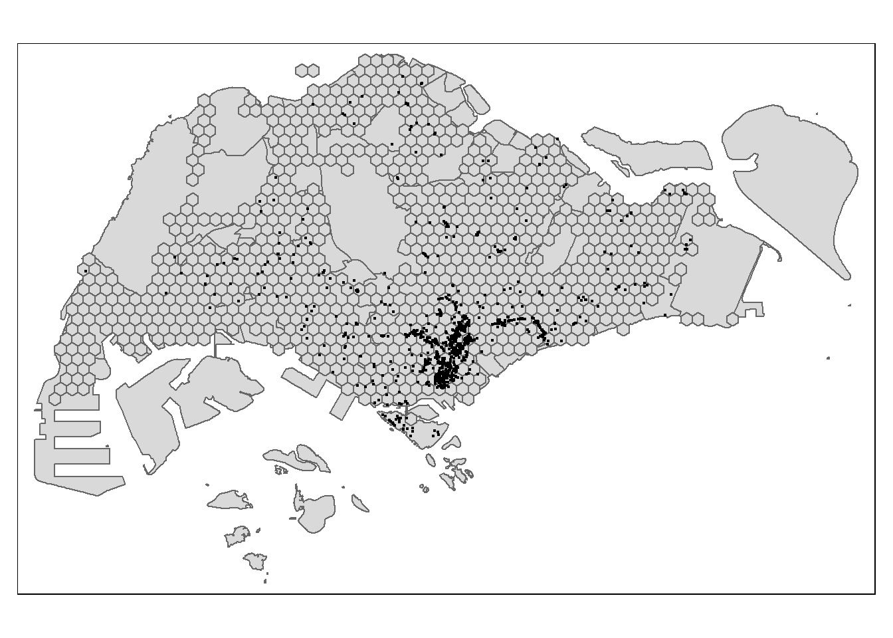
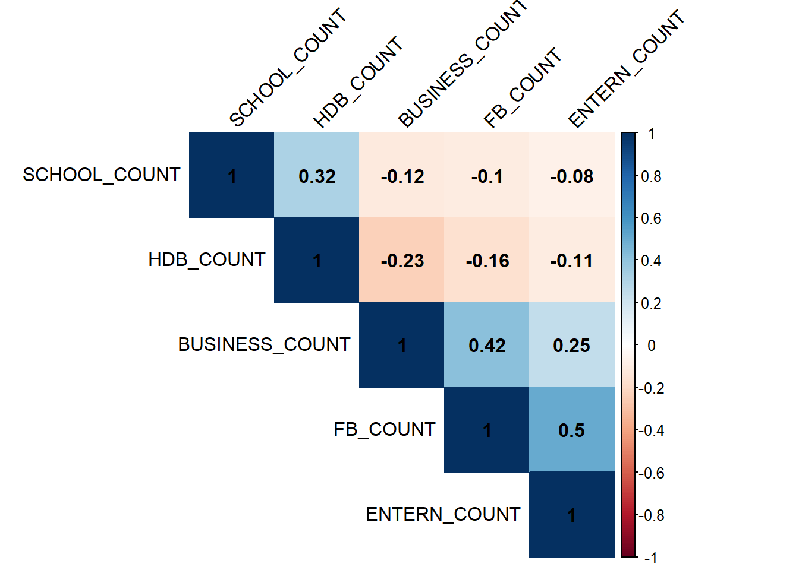
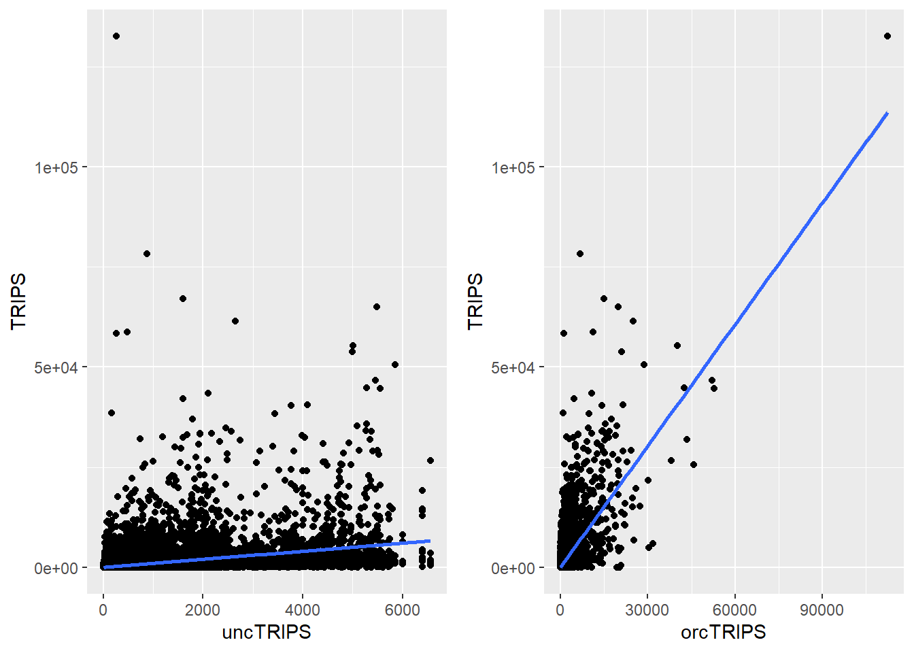
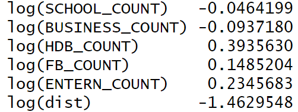

pacman::p_load(sf, sfdep, spdep, tmap, tidyverse, knitr, dplyr, readr, DT, stplanr, performance, ggpubr, corrplot)Take-home Exercise 2: Applied Spatial Interaction Models: A case study of Singapore public bus commuter flows
1 Background
Urban commuters wake up early for work, facing challenges that transport operators and urban managers must understand. Traditional surveys, costly and outdated, are being replaced by digital data from GPS and smart cards. This data, while abundant, is underutilized by planners, affecting the return on investment in urban infrastructure. Thus, efficient data strategies are needed to better understand and improve urban commuting.
2 Motivation and Objective
This take-home exercise is motivated by two main reasons. Firstly, despite increasing amounts of open data available for public consumption, there has not been significant practice research carried out to show how these disparate data sources can be integrated, analysed, and modelled to support policy making decisions.
Secondly, there is a general lack of practical research to show how geospatial data science and analysis (GDSA) can be used to support decision-making.
Hence, the task for this take-home exercise is to conduct a case study to demonstrate the potential value of GDSA to integrate publicly available data from multiple sources for building a spatial interaction models to determine factors affecting urban mobility patterns of public bus transit.
3 The Task
The specific tasks of this take-home exercise are as follows:
Geospatial Data Science
Derive an analytical hexagon data of 375m (this distance is the perpendicular distance between the centre of the hexagon and its edges) to represent the traffic analysis zone (TAZ).
With reference to the time intervals provided in the table below, construct an O-D matrix of commuter flows for a time interval of your choice by integrating Passenger Volume by Origin Destination Bus Stops and Bus Stop Location from LTA DataMall. The O-D matrix must be aggregated at the analytics hexagon level
Peak hour period Bus tap on time Weekday afternoon peak 6am to 9am Weekday afternoon peak 5pm to 8pm Weekend/holiday afternoon peak 11am to 2pm Weekend/holiday evening peak 4pm to 7pm Display the O-D flows of the passenger trips by using appropriate geovisualisation methods (not more than 5 maps).
Describe the spatial patterns revealed by the geovisualisation (not more than 100 words per visual).
Assemble at least three propulsive and three attractiveness variables by using aspatial and geospatial from publicly available sources.
Compute a distance matrix by using the analytical hexagon data derived earlier.
Spatial Interaction Modelling
Calibrate spatial interactive models to determine factors affecting urban commuting flows at the selected time interval.
Present the modelling results by using appropriate geovisualisation and graphical visualisation methods. (Not more than 5 visuals)
With reference to the Spatial Interaction Model output tables, maps and data visualisation prepared, describe the modelling results. (not more than 100 words per visual).
4 Getting Started
4.1 Loading R packages
The code chunk below installs and loads the packages will be used into R environment.
4.2 The data
4.2.1 Open Government Data
Data from several open government sources will be used:
Passenger Volume by Origin Destination Bus Stops, Bus Stop Location, Train Station and Train Station Exit Point, just to name a few of them, from LTA DataMall.
Master Plan 2019 Subzone Boundary, HDB Property Information, School Directory and Information and other relevant data from Data.gov.sg.
4.2.2 Specially collected data
Business, entertn, F&B, FinServ, Leisure&Recreation and Retails are geospatial data sets of the locations of business establishments, entertainments, food and beverage outlets, financial centres, leisure and recreation centres, retail and services stores/outlets.
HDB: This data set is the geocoded version of HDB Property Information data from data.gov. The data set is prepared using September 2021 data. If you want to prepare you own data by using the latest HDB Property Information provided on data.gov.sg, this link provides a useful step-by-step guide.
5 Processing and Visualising Flow Data
5.1 Preparing the Flow Data
5.1.1 Importing the OD data
Firstly, we will import the Passenger Volume by Origin Destination Bus Stops data set downloaded from LTA DataMall by using read_csv() of readr package.
odbus <- read_csv("data/aspatial/origin_destination_bus_202308.csv")Then, we use glimpse() to check of odbus tibble data frame.
glimpse(odbus)Rows: 5,709,512
Columns: 7
$ YEAR_MONTH <chr> "2023-08", "2023-08", "2023-08", "2023-08", "2023-…
$ DAY_TYPE <chr> "WEEKDAY", "WEEKENDS/HOLIDAY", "WEEKENDS/HOLIDAY",…
$ TIME_PER_HOUR <dbl> 16, 16, 14, 14, 17, 17, 17, 17, 7, 17, 14, 10, 10,…
$ PT_TYPE <chr> "BUS", "BUS", "BUS", "BUS", "BUS", "BUS", "BUS", "…
$ ORIGIN_PT_CODE <chr> "04168", "04168", "80119", "80119", "44069", "4406…
$ DESTINATION_PT_CODE <chr> "10051", "10051", "90079", "90079", "17229", "1722…
$ TOTAL_TRIPS <dbl> 7, 2, 3, 10, 5, 4, 3, 22, 3, 3, 7, 1, 3, 1, 3, 1, …We can see that column ORIGIN_PT_CODE and DESTINATION_PT_CODE are in chr data type. For further processing, we should convert these data values into factor data type.
odbus$ORIGIN_PT_CODE <- as.factor(odbus$ORIGIN_PT_CODE)
odbus$DESTINATION_PT_CODE <- as.factor(odbus$DESTINATION_PT_CODE) Notice that both of them are in factor data type now.
glimpse(odbus)Rows: 5,709,512
Columns: 7
$ YEAR_MONTH <chr> "2023-08", "2023-08", "2023-08", "2023-08", "2023-…
$ DAY_TYPE <chr> "WEEKDAY", "WEEKENDS/HOLIDAY", "WEEKENDS/HOLIDAY",…
$ TIME_PER_HOUR <dbl> 16, 16, 14, 14, 17, 17, 17, 17, 7, 17, 14, 10, 10,…
$ PT_TYPE <chr> "BUS", "BUS", "BUS", "BUS", "BUS", "BUS", "BUS", "…
$ ORIGIN_PT_CODE <fct> 04168, 04168, 80119, 80119, 44069, 44069, 20281, 2…
$ DESTINATION_PT_CODE <fct> 10051, 10051, 90079, 90079, 17229, 17229, 20141, 2…
$ TOTAL_TRIPS <dbl> 7, 2, 3, 10, 5, 4, 3, 22, 3, 3, 7, 1, 3, 1, 3, 1, …5.1.2 Extracting the study data
For the purpose of this exercise, we will extract commuting flows on weekday and between 17 and 20 o’clock(namely, the weekday afternoon peak).
odbus17_20 <- odbus %>%
filter(DAY_TYPE == "WEEKDAY") %>%
filter(TIME_PER_HOUR >= 17 &
TIME_PER_HOUR <= 20) %>%
group_by(ORIGIN_PT_CODE,
DESTINATION_PT_CODE) %>%
summarise(TRIPS = sum(TOTAL_TRIPS))5.2 Working with Geospatial Data
5.2.1 Importing the geospatial data
According to epsg.io, Singapore’s coordinate system is SVY21 with EPSG 3414. So we need to re-assign EPSG to 3414 by using st_transform().
busstop <- st_read(dsn = "data/geospatial",
layer = "BusStop") %>%
st_transform(crs = 3414)Reading layer `BusStop' from data source
`C:\Stella12121\ISSS624\Take-home_Ex2\data\geospatial' using driver `ESRI Shapefile'
Simple feature collection with 5161 features and 3 fields
Geometry type: POINT
Dimension: XY
Bounding box: xmin: 3970.122 ymin: 26482.1 xmax: 48284.56 ymax: 52983.82
Projected CRS: SVY21Rename the column ‘BUS_STOP_N’ to ‘ORIGIN_PT_CODE’ for easier join with odbus dataset.
busstop <- busstop %>% rename(ORIGIN_PT_CODE = BUS_STOP_N)Next, we will import mpsz data
mpsz <- st_read(dsn = "data/geospatial", layer = "MPSZ-2019") %>%
st_transform(crs = 3414)Reading layer `MPSZ-2019' from data source
`C:\Stella12121\ISSS624\Take-home_Ex2\data\geospatial' using driver `ESRI Shapefile'
Simple feature collection with 332 features and 6 fields
Geometry type: MULTIPOLYGON
Dimension: XY
Bounding box: xmin: 103.6057 ymin: 1.158699 xmax: 104.0885 ymax: 1.470775
Geodetic CRS: WGS 845.3 Geospatial data wrangling
5.3.1 Combining busstop and hexagon layer
First, using st_make_grid() to create the hexagon layer.
area_honeycomb_grid = st_make_grid(busstop, cellsize = 750, what = "polygons", square = FALSE)
# To sf and add grid ID
honeycomb_grid_sf = st_sf(area_honeycomb_grid) %>%
# add grid ID
mutate(grid_id = 1:length(lengths(area_honeycomb_grid)))
honeycomb_grid_sf$num_bus = lengths(st_intersects(honeycomb_grid_sf, busstop))
bus_count_hex = filter(honeycomb_grid_sf, num_bus > 0)Second, we populate the grid_id of honeycomb_grid_sf sf data frame into busstop sf data frame.
busstop_grid <- st_intersection(busstop, honeycomb_grid_sf) %>%
select(ORIGIN_PT_CODE, grid_id) %>%
st_drop_geometry()
Note
st_intersection()is used to perform point and polygon overly and the output will be in point sf object.select()of dplyr package is then use to retain only ORIGIN_PT_CODE and grid_id in the busstop_grid sf data frame.
5.3.2 Constructing OD matrix
Third, we are going to append the grid_id from busstop_grid data frame onto odbus17_20 data frame.
od_data <- left_join(odbus17_20, busstop_grid,
by = "ORIGIN_PT_CODE" ) %>%
rename(ORIGIN_BS = ORIGIN_PT_CODE,
ORIGIN_SZ = grid_id,
DESTIN_BS = DESTINATION_PT_CODE)Before continue, it is good for us to check for duplicating records.
duplicate <- od_data %>%
group_by_all() %>%
filter(n()>1) %>%
ungroup()Since there are duplicates in the dataset, the code chunk below will be used to retain the unique records.
od_data <- unique(od_data)Next, we will update od_data data frame with the hexagon layer.
od_data <- left_join(od_data , busstop_grid,
by = c("DESTIN_BS" = "ORIGIN_PT_CODE")) duplicate <- od_data %>%
group_by_all() %>%
filter(n()>1) %>%
ungroup()od_data <- unique(od_data)od_data <- od_data %>%
rename(DESTIN_SZ = grid_id) %>%
drop_na() %>%
group_by(ORIGIN_SZ, DESTIN_SZ) %>%
summarise(AFTERNOON_PEAK = sum(TRIPS))od_data = filter(od_data, AFTERNOON_PEAK > 0)5.4 Visualising Spatial Interaction
In this section, we will learn how to prepare a desire line by using stplanr package.
5.4.1 Removing intra-zonal flows
We will not plot the intra-zonal flows. The code chunk below will be used to remove intra-zonal flows.
od_data1 <- od_data[od_data$ORIGIN_SZ!=od_data$DESTIN_SZ,]5.4.2 Creating desire lines
In this code chunk below, od2line() of stplanr package is used to create the desire lines.
flowLine <- od2line(flow = od_data1,
zones = honeycomb_grid_sf,
zone_code = "grid_id")5.4.3 Visualising the desire lines
To visualise the resulting desire lines, the code chunk below is used. When the flow data are very messy and highly skewed, it is wiser to focus on selected flows, for example flow greater than or equal to 5000 as shown below.
Show the code
tmap_mode("plot")
tmap_options(check.and.fix = TRUE)
tm_shape(mpsz) +
tm_polygons() +
tm_shape(bus_count_hex) +
tm_polygons() +
flowLine %>%
filter(AFTERNOON_PEAK >= 5000) %>%
tm_shape() +
tm_lines(lwd = "AFTERNOON_PEAK",
style = "quantile",
scale = c(0.3, 3, 7, 11, 15, 19, 23, 27),
n = 6,
alpha = 0.3) +
tm_layout(main.title = 'O-D Flow of Weekday afternoon Peak' ,
main.title.position = "center")
In this flow map, thicker line means more trips between the two hexagons. From above, we can observe that passenger flows between Woodlands(north region) and Tampines(east region) are much more compared to other regions. And we also notice that there is almost no passenger flow in the central area.
6 Assemble propulsive and attractiveness variables
In this section, we will try to find out the factors affecting the passenger flows of bus during weekday afternoon peak.
6.1 Constructing distance matrix
In spatial interaction, a distance matrix is a table that shows the distance between pairs of locations.
Since using sf function took relatively longer time that sp method especially the data set is large, we will use sp method in the code chunks below.
bus_count_hex_sp <- as(bus_count_hex, "Spatial")Next, spDists() of sp package will be used to compute the Euclidean distance between the centroids of the hexagons.
dist <- sp::spDists(bus_count_hex_sp,
longlat = FALSE)
head(dist, n=c(6, 6)) [,1] [,2] [,3] [,4] [,5] [,6]
[1,] 0.000 750.000 3269.174 1500.000 2704.163 3968.627
[2,] 750.000 0.000 2598.076 750.000 1984.313 3269.174
[3,] 3269.174 2598.076 0.000 1984.313 750.000 750.000
[4,] 1500.000 750.000 1984.313 0.000 1299.038 2598.076
[5,] 2704.163 1984.313 750.000 1299.038 0.000 1299.038
[6,] 3968.627 3269.174 750.000 2598.076 1299.038 0.000Then, we will create a list sorted according to the the distance matrix by grid_id.
grid_id_names <- bus_count_hex$grid_idNext we will use paste0() to attach grid_id to row and column for distance matrix matching ahead.
colnames(dist) <- paste0(grid_id_names)
rownames(dist) <- paste0(grid_id_names)Next, we will pivot the distance matrix into a long table by using the row and column grid_id as show in the code chunk below.
distPair <- reshape2::melt(dist) %>%
rename(dist = value)
head(distPair, 10) Var1 Var2 dist
1 23 23 0.000
2 44 23 750.000
3 46 23 3269.174
4 66 23 1500.000
5 67 23 2704.163
6 68 23 3968.627
7 86 23 1299.038
8 87 23 2250.000
9 88 23 3436.932
10 89 23 4683.748Then we are going to append a constant value to replace the intra-zonal distance of 0.
First, we will select and find out the minimum value of the distance by using summary().
distPair %>%
filter(dist > 0) %>%
summary() Var1 Var2 dist
Min. : 23 Min. : 23 Min. : 750
1st Qu.: 871 1st Qu.: 871 1st Qu.: 8352
Median :1324 Median :1324 Median :13332
Mean :1269 Mean :1269 Mean :14162
3rd Qu.:1688 3rd Qu.:1688 3rd Qu.:18929
Max. :2505 Max. :2505 Max. :44680 Second, a constant distance value of 300m is added into intra-zones distance.
distPair$dist <- ifelse(distPair$dist == 0,
300, distPair$dist)The code chunk below is used to rename the origin and destination fields.
distPair <- distPair %>%
rename(ORIGIN_SZ = Var1,
DESTIN_SZ = Var2)
distPair %>% head() ORIGIN_SZ DESTIN_SZ dist
1 23 23 300.000
2 44 23 750.000
3 46 23 3269.174
4 66 23 1500.000
5 67 23 2704.163
6 68 23 3968.6276.2 Preparing flow data
First, we set ORIGIN_SZ and DESTIN_SZ to factor data type.
distPair <- distPair %>%
mutate(
ORIGIN_SZ = as.factor(ORIGIN_SZ),
DESTIN_SZ = as.factor(DESTIN_SZ)
)Next, we will compute the total passenger trip between and within planning subzones by using the code chunk below. The output is all flow_data.
flow_data <- od_data %>%
group_by(ORIGIN_SZ, DESTIN_SZ) %>%
summarize(TRIPS = sum(AFTERNOON_PEAK)) 6.2.1 Separating intra-flow from passenger volume df
Code chunk below is used to add three new fields in flow_data dataframe.
flow_data$FlowNoIntra <- ifelse(
flow_data$ORIGIN_SZ == flow_data$DESTIN_SZ,
0, flow_data$TRIPS)
flow_data$offset <- ifelse(
flow_data$ORIGIN_SZ == flow_data$DESTIN_SZ,
0.000001, 1)6.2.2 Combining passenger volume data with distance value
Before we can join flow_data and distPair, we need to convert data value type of ORIGIN_SZ and DESTIN_SZ fields of flow_data dataframe into factor data type.
flow_data$ORIGIN_SZ <- as.factor(flow_data$ORIGIN_SZ)
flow_data$DESTIN_SZ <- as.factor(flow_data$DESTIN_SZ)Now, left_join() of dplyr will be used to flow_data dataframe and distPair dataframe. The output is called flow_data1.
flow_data1 <- flow_data %>%
left_join (distPair,
by = c("ORIGIN_SZ" = "ORIGIN_SZ",
"DESTIN_SZ" = "DESTIN_SZ"))6.3 preparing propulsive and attractiveness variables
First, let us learn about the definition of the two variables.
The definition
- propulsive factors: These are factors that “push” or propel people to leave a certain area or point of origin.They often relate to characteristics of the departure area that make people want to or need to leave, such as employment opportunities, residential density, or the availability of services and amenities.
- attractiveness factors: The factors that “pull” or attract people to a destination.These are typically features or characteristics of an area that draw people in, such as shopping centers, tourist attractions, educational institutions, or recreational facilities.
We will use Business, Schools and hdb datasets to derive propulsive factors; entern and F&B datasets to derive attractiveness factors.
- Business: locations of business establishments
- Schools: the information of schools including the location
- hdb: a geocoded version of HDB Property Information data from data.gov.
- entern: entertainments
- F&B: food and beverage outlets
Next, we are going to import those datasets.
business <- st_read(dsn = "data/geospatial",
layer = "Business") %>%
st_transform(crs = 3414)Reading layer `Business' from data source
`C:\Stella12121\ISSS624\Take-home_Ex2\data\geospatial' using driver `ESRI Shapefile'
Simple feature collection with 6550 features and 3 fields
Geometry type: POINT
Dimension: XY
Bounding box: xmin: 3669.148 ymin: 25408.41 xmax: 47034.83 ymax: 50148.54
Projected CRS: SVY21 / Singapore TMThen we will look at the distribution of business attribute.
tmap_options(check.and.fix = TRUE)
tm_shape(mpsz) +
tm_polygons() +
tm_shape(bus_count_hex) +
tm_polygons() +
tm_shape(business) +
tm_dots()
bus_count_hex$`BUSINESS_COUNT`<- lengths(
st_intersects(
bus_count_hex, business))summary(bus_count_hex$BUSINESS_COUNT) Min. 1st Qu. Median Mean 3rd Qu. Max.
0.000 0.000 1.000 7.273 7.000 97.000 We will only keep those required variables and rename some columns.
schools <- read_csv("data/aspatial/schools.csv") %>%
rename(latitude = "results.LATITUDE",
longitude = "results.LONGITUDE")%>%
select(postal_code, school_name, latitude, longitude)Then, convert the dataset into simple feature.
schools_sf <- st_as_sf(schools,
coords = c("longitude", "latitude"),
crs=4326) %>%
st_transform(crs = 3414)Next we will plot the distribution of schools attribute.
tmap_options(check.and.fix = TRUE)
tm_shape(mpsz) +
tm_polygons() +
tm_shape(bus_count_hex) +
tm_polygons() +
tm_shape(schools_sf) +
tm_dots()
bus_count_hex$`SCHOOL_COUNT`<- lengths(
st_intersects(
bus_count_hex, schools_sf))summary(bus_count_hex$`SCHOOL_COUNT`) Min. 1st Qu. Median Mean 3rd Qu. Max.
0.0000 0.0000 0.0000 0.4125 1.0000 4.0000 hdb <- read_csv("data/aspatial/hdb.csv")
hdb <- distinct(hdb)Next, convert the dataset into simple feature.
hdb_sf <- st_as_sf(hdb,
coords=c('lng', 'lat'),
crs=4326) %>%
st_transform(crs=3414)hdb_sf <- hdb_sf %>%
filter(residential == "Y")Then, we plot the distribution of HDB.
tmap_options(check.and.fix = TRUE)
tm_shape(mpsz) +
tm_polygons() +
tm_shape(bus_count_hex) +
tm_polygons() +
tm_shape(hdb_sf) +
tm_dots()
bus_count_hex$`HDB_COUNT`<- lengths(
st_intersects(
bus_count_hex, hdb_sf))summary(bus_count_hex$`HDB_COUNT`) Min. 1st Qu. Median Mean 3rd Qu. Max.
0.00 0.00 0.00 12.15 22.00 82.00 entertainment_sf <- st_read(dsn = "data/geospatial",
layer = "entertn") %>%
st_transform(crs = 3414)Reading layer `entertn' from data source
`C:\Stella12121\ISSS624\Take-home_Ex2\data\geospatial' using driver `ESRI Shapefile'
Simple feature collection with 114 features and 3 fields
Geometry type: POINT
Dimension: XY
Bounding box: xmin: 10809.34 ymin: 26528.63 xmax: 41600.62 ymax: 46375.77
Projected CRS: SVY21 / Singapore TMtmap_options(check.and.fix = TRUE)
tm_shape(mpsz) +
tm_polygons() +
tm_shape(bus_count_hex) +
tm_polygons() +
tm_shape(entertainment_sf) +
tm_dots()
bus_count_hex$`ENTERN_COUNT`<- lengths(
st_intersects(
bus_count_hex, entertainment_sf))summary(bus_count_hex$`ENTERN_COUNT`) Min. 1st Qu. Median Mean 3rd Qu. Max.
0.0000 0.0000 0.0000 0.1331 0.0000 9.0000 fb_sf <- st_read(dsn = "data/geospatial",
layer = "F&B") %>%
st_transform(crs = 3414)Reading layer `F&B' from data source
`C:\Stella12121\ISSS624\Take-home_Ex2\data\geospatial' using driver `ESRI Shapefile'
Simple feature collection with 1919 features and 3 fields
Geometry type: POINT
Dimension: XY
Bounding box: xmin: 6010.495 ymin: 25343.27 xmax: 45462.43 ymax: 48796.21
Projected CRS: SVY21 / Singapore TMtmap_options(check.and.fix = TRUE)
tm_shape(mpsz) +
tm_polygons() +
tm_shape(bus_count_hex) +
tm_polygons() +
tm_shape(fb_sf) +
tm_dots()
bus_count_hex$`FB_COUNT`<- lengths(
st_intersects(
bus_count_hex, fb_sf))summary(bus_count_hex$`FB_COUNT`) Min. 1st Qu. Median Mean 3rd Qu. Max.
0.000 0.000 0.000 2.204 1.000 133.000 The data will be combined together.
bus_count_hex_tidy <- bus_count_hex %>%
st_drop_geometry() %>%
select(grid_id, SCHOOL_COUNT, BUSINESS_COUNT, HDB_COUNT, FB_COUNT, ENTERN_COUNT)bus_count_hex_tidy$grid_id <- as.factor(bus_count_hex_tidy$grid_id)
flow_data1 <- flow_data1 %>%
left_join(bus_count_hex_tidy,
by = c("DESTIN_SZ" = "grid_id"))6.3.1 Checking for 0 values
summary(flow_data1) ORIGIN_SZ DESTIN_SZ TRIPS FlowNoIntra
1474 : 366 1474 : 328 Min. : 1.0 Min. : 0.0
1452 : 346 1516 : 309 1st Qu.: 8.0 1st Qu.: 7.0
1960 : 304 1960 : 304 Median : 37.0 Median : 36.0
1496 : 300 1477 : 297 Mean : 363.7 Mean : 350.9
1432 : 295 1496 : 295 3rd Qu.: 166.0 3rd Qu.: 160.0
1477 : 293 1749 : 282 Max. :132650.0 Max. :132650.0
(Other):66981 (Other):67070
offset dist SCHOOL_COUNT BUSINESS_COUNT
Min. :0.000001 Min. : 300 Min. :0.0000 Min. : 0.000
1st Qu.:1.000000 1st Qu.: 3000 1st Qu.:0.0000 1st Qu.: 0.000
Median :1.000000 Median : 5662 Median :0.0000 Median : 1.000
Mean :0.990724 Mean : 6443 Mean :0.5507 Mean : 6.661
3rd Qu.:1.000000 3rd Qu.: 9093 3rd Qu.:1.0000 3rd Qu.: 6.000
Max. :1.000000 Max. :24784 Max. :4.0000 Max. :97.000
HDB_COUNT FB_COUNT ENTERN_COUNT
Min. : 0.00 Min. : 0.000 Min. :0.0000
1st Qu.: 0.00 1st Qu.: 0.000 1st Qu.:0.0000
Median : 8.00 Median : 0.000 Median :0.0000
Mean :16.61 Mean : 5.211 Mean :0.3119
3rd Qu.:29.00 3rd Qu.: 2.000 3rd Qu.:0.0000
Max. :82.00 Max. :133.000 Max. :9.0000
From the above, it is clear that there are 0 values in most of the variables. The code chunk below will be used to replace them to 0.99.
flow_data1$SCHOOL_COUNT <- ifelse(
flow_data1$SCHOOL_COUNT == 0,
0.99, flow_data1$SCHOOL_COUNT)
flow_data1$BUSINESS_COUNT <- ifelse(
flow_data1$BUSINESS_COUNT == 0,
0.99, flow_data1$BUSINESS_COUNT)
flow_data1$HDB_COUNT <- ifelse(
flow_data1$HDB_COUNT == 0,
0.99, flow_data1$HDB_COUNT)
flow_data1$FB_COUNT <- ifelse(
flow_data1$FB_COUNT == 0,
0.99, flow_data1$FB_COUNT)
flow_data1$ENTERN_COUNT <- ifelse(
flow_data1$ENTERN_COUNT == 0,
0.99, flow_data1$ENTERN_COUNT)Check again to make sure that all 0 values are replaced.
summary(flow_data1) ORIGIN_SZ DESTIN_SZ TRIPS FlowNoIntra
1474 : 366 1474 : 328 Min. : 1.0 Min. : 0.0
1452 : 346 1516 : 309 1st Qu.: 8.0 1st Qu.: 7.0
1960 : 304 1960 : 304 Median : 37.0 Median : 36.0
1496 : 300 1477 : 297 Mean : 363.7 Mean : 350.9
1432 : 295 1496 : 295 3rd Qu.: 166.0 3rd Qu.: 160.0
1477 : 293 1749 : 282 Max. :132650.0 Max. :132650.0
(Other):66981 (Other):67070
offset dist SCHOOL_COUNT BUSINESS_COUNT
Min. :0.000001 Min. : 300 Min. :0.990 Min. : 0.990
1st Qu.:1.000000 1st Qu.: 3000 1st Qu.:0.990 1st Qu.: 0.990
Median :1.000000 Median : 5662 Median :0.990 Median : 1.000
Mean :0.990724 Mean : 6443 Mean :1.179 Mean : 7.104
3rd Qu.:1.000000 3rd Qu.: 9093 3rd Qu.:1.000 3rd Qu.: 6.000
Max. :1.000000 Max. :24784 Max. :4.000 Max. :97.000
HDB_COUNT FB_COUNT ENTERN_COUNT
Min. : 0.99 Min. : 0.99 Min. :0.990
1st Qu.: 0.99 1st Qu.: 0.99 1st Qu.:0.990
Median : 8.00 Median : 0.99 Median :0.990
Mean :16.97 Mean : 5.75 Mean :1.167
3rd Qu.:29.00 3rd Qu.: 2.00 3rd Qu.:0.990
Max. :82.00 Max. :133.00 Max. :9.000
Next, remove the duplicates.
duplicate <- flow_data1 %>%
group_by_all() %>%
filter(n()>1) %>%
ungroup()
flow_data1 <- unique(flow_data1)Then, change the data type of ORIGIN_SZ and DESTIN_SZ to character.
flow_data1$ORIGIN_SZ <- as.character(flow_data1$ORIGIN_SZ)
flow_data1$DESTIN_SZ <- as.character(flow_data1$DESTIN_SZ)Inter-zonal flow will be selected from flow_data1 and save into a new output data.frame called inter_zonal_flow by using the code chunk below.
inter_zonal_flow <- flow_data1 %>%
filter(FlowNoIntra > 0)summary(inter_zonal_flow) ORIGIN_SZ DESTIN_SZ TRIPS FlowNoIntra
Length:68246 Length:68246 Min. : 1.0 Min. : 1.0
Class :character Class :character 1st Qu.: 8.0 1st Qu.: 8.0
Mode :character Mode :character Median : 37.0 Median : 37.0
Mean : 354.2 Mean : 354.2
3rd Qu.: 163.0 3rd Qu.: 163.0
Max. :132650.0 Max. :132650.0
offset dist SCHOOL_COUNT BUSINESS_COUNT HDB_COUNT
Min. :1 Min. : 750 Min. :0.990 Min. : 0.990 Min. : 0.99
1st Qu.:1 1st Qu.: 3269 1st Qu.:0.990 1st Qu.: 0.990 1st Qu.: 0.99
Median :1 Median : 5662 Median :0.990 Median : 1.000 Median : 8.00
Mean :1 Mean : 6501 Mean :1.179 Mean : 7.096 Mean :16.98
3rd Qu.:1 3rd Qu.: 9124 3rd Qu.:1.000 3rd Qu.: 6.000 3rd Qu.:29.00
Max. :1 Max. :24784 Max. :4.000 Max. :97.000 Max. :82.00
FB_COUNT ENTERN_COUNT
Min. : 0.990 Min. :0.990
1st Qu.: 0.990 1st Qu.:0.990
Median : 0.990 Median :0.990
Mean : 5.771 Mean :1.167
3rd Qu.: 2.000 3rd Qu.:0.990
Max. :133.000 Max. :9.000 7 Correlation Analysis
This step aims to avoid including explanatory variables that are highly correlated. The code chunk below will be used to show the correlation matrix.
correlation_matrix <- cor(inter_zonal_flow[,7:11])
corrplot(correlation_matrix, method = "color", type = "upper", order = "hclust",
tl.col = "black", tl.srt = 45, addCoef.col = "black")
Since the coefficients are all less than 0.6, we will include all the variables in our model.
8 Calibrating SIM model
8.1 Unconstrained
uncSIM <- glm(formula = TRIPS ~
log(SCHOOL_COUNT)+
log(BUSINESS_COUNT)+
log(HDB_COUNT)+
log(FB_COUNT)+
log(ENTERN_COUNT)+
log(dist),
family = poisson(link = "log"),
data = inter_zonal_flow,
na.action = na.exclude)
uncSIM
Call: glm(formula = TRIPS ~ log(SCHOOL_COUNT) + log(BUSINESS_COUNT) +
log(HDB_COUNT) + log(FB_COUNT) + log(ENTERN_COUNT) + log(dist),
family = poisson(link = "log"), data = inter_zonal_flow,
na.action = na.exclude)
Coefficients:
(Intercept) log(SCHOOL_COUNT) log(BUSINESS_COUNT)
16.41100 -0.03864 -0.08620
log(HDB_COUNT) log(FB_COUNT) log(ENTERN_COUNT)
0.39217 0.12390 0.25789
log(dist)
-1.42541
Degrees of Freedom: 68245 Total (i.e. Null); 68239 Residual
Null Deviance: 96930000
Residual Deviance: 53030000 AIC: 534100008.1.2 Goodness of fit
In order to measure how much variation of the trips can be accounted by the model we will write a function to calculate R-Squared value as shown below.
CalcRSquared <- function(observed,estimated){
r <- cor(observed,estimated)
R2 <- r^2
R2
}Next, we will compute the R-squared of the unconstrained SIM by using the code chunk below.
CalcRSquared(uncSIM$data$TRIPS, uncSIM$fitted.values)[1] 0.15511168.2 Origin constrained
options(max.print = 10000)
orcSIM <- glm(formula = TRIPS ~
ORIGIN_SZ +
log(SCHOOL_COUNT)+
log(BUSINESS_COUNT)+
log(HDB_COUNT)+
log(FB_COUNT)+
log(ENTERN_COUNT)+
log(dist) - 1,
family = poisson(link = "log"),
data = inter_zonal_flow,
na.action = na.exclude)
summary(orcSIM)
Call:
glm(formula = TRIPS ~ ORIGIN_SZ + log(SCHOOL_COUNT) + log(BUSINESS_COUNT) +
log(HDB_COUNT) + log(FB_COUNT) + log(ENTERN_COUNT) + log(dist) -
1, family = poisson(link = "log"), data = inter_zonal_flow,
na.action = na.exclude)
Coefficients:
Estimate Std. Error z value Pr(>|z|)
ORIGIN_SZ1001 15.6042898 0.0200294 779.07 <2e-16 ***
ORIGIN_SZ1003 17.7203024 0.0036962 4794.25 <2e-16 ***
ORIGIN_SZ1004 17.2648088 0.0047980 3598.34 <2e-16 ***
ORIGIN_SZ1011 15.9455944 0.0141458 1127.23 <2e-16 ***
ORIGIN_SZ1012 17.5761602 0.0060576 2901.52 <2e-16 ***
ORIGIN_SZ1013 15.9250291 0.0084346 1888.06 <2e-16 ***
ORIGIN_SZ1014 14.8691381 0.0135558 1096.88 <2e-16 ***
ORIGIN_SZ1015 16.9108174 0.0053445 3164.16 <2e-16 ***
ORIGIN_SZ1016 16.9323152 0.0053275 3178.30 <2e-16 ***
ORIGIN_SZ1018 15.8176178 0.0123161 1284.31 <2e-16 ***
ORIGIN_SZ1019 16.6606379 0.0066973 2487.68 <2e-16 ***
ORIGIN_SZ1023 15.5750757 0.0125615 1239.91 <2e-16 ***
ORIGIN_SZ1024 16.7218892 0.0061282 2728.67 <2e-16 ***
ORIGIN_SZ1025 14.1267421 0.0316029 447.01 <2e-16 ***
ORIGIN_SZ1033 17.0324614 0.0059128 2880.61 <2e-16 ***
ORIGIN_SZ1034 16.6719572 0.0057841 2882.37 <2e-16 ***
ORIGIN_SZ1035 16.9424255 0.0048719 3477.60 <2e-16 ***
ORIGIN_SZ1036 17.2166840 0.0046547 3698.75 <2e-16 ***
ORIGIN_SZ1037 16.5256017 0.0058288 2835.16 <2e-16 ***
ORIGIN_SZ1043 16.6663425 0.0107912 1544.44 <2e-16 ***
ORIGIN_SZ1045 16.5390609 0.0056395 2932.73 <2e-16 ***
ORIGIN_SZ1046 16.4085305 0.0067647 2425.60 <2e-16 ***
ORIGIN_SZ1053 17.2069060 0.0052217 3295.24 <2e-16 ***
ORIGIN_SZ1054 16.9491595 0.0053634 3160.12 <2e-16 ***
ORIGIN_SZ1055 16.2133478 0.0072308 2242.27 <2e-16 ***
ORIGIN_SZ1056 15.5887236 0.0098287 1586.04 <2e-16 ***
ORIGIN_SZ1064 14.7272219 0.0578758 254.46 <2e-16 ***
ORIGIN_SZ1066 17.7364631 0.0036065 4917.95 <2e-16 ***
ORIGIN_SZ1067 16.9309150 0.0081249 2083.84 <2e-16 ***
ORIGIN_SZ1074 15.7710167 0.0104590 1507.88 <2e-16 ***
ORIGIN_SZ1075 16.9129697 0.0060806 2781.48 <2e-16 ***
ORIGIN_SZ1076 16.0045427 0.0072629 2203.59 <2e-16 ***
ORIGIN_SZ1077 15.3742281 0.0117828 1304.80 <2e-16 ***
ORIGIN_SZ1079 16.8312086 0.0056675 2969.76 <2e-16 ***
ORIGIN_SZ1085 13.5596668 0.0762725 177.78 <2e-16 ***
ORIGIN_SZ1087 16.3451583 0.0072881 2242.73 <2e-16 ***
ORIGIN_SZ1088 15.9421727 0.0091118 1749.62 <2e-16 ***
ORIGIN_SZ109 15.5848750 0.0329020 473.68 <2e-16 ***
ORIGIN_SZ1094 14.3322563 0.0419400 341.73 <2e-16 ***
ORIGIN_SZ1095 16.3636811 0.0142683 1146.86 <2e-16 ***
ORIGIN_SZ1096 16.2518163 0.0122909 1322.27 <2e-16 ***
ORIGIN_SZ1097 17.1745522 0.0040640 4225.98 <2e-16 ***
ORIGIN_SZ1098 14.6554026 0.0193540 757.23 <2e-16 ***
ORIGIN_SZ1099 16.0510274 0.0078547 2043.49 <2e-16 ***
ORIGIN_SZ110 16.9573447 0.0289555 585.63 <2e-16 ***
ORIGIN_SZ1105 17.7909157 0.0083607 2127.93 <2e-16 ***
ORIGIN_SZ1106 12.9915301 0.0940955 138.07 <2e-16 ***
ORIGIN_SZ1107 15.2233153 0.0157771 964.90 <2e-16 ***
ORIGIN_SZ1108 18.7459121 0.0024593 7622.49 <2e-16 ***
ORIGIN_SZ1109 15.3224058 0.0192894 794.34 <2e-16 ***
ORIGIN_SZ111 17.2253196 0.0117568 1465.14 <2e-16 ***
ORIGIN_SZ1116 16.2180686 0.0080878 2005.26 <2e-16 ***
ORIGIN_SZ1117 16.3284819 0.0079657 2049.86 <2e-16 ***
ORIGIN_SZ1118 14.4793382 0.0192609 751.75 <2e-16 ***
ORIGIN_SZ1119 15.9822261 0.0077356 2066.05 <2e-16 ***
ORIGIN_SZ112 15.1459674 0.0315781 479.63 <2e-16 ***
ORIGIN_SZ1120 15.1400142 0.0158538 954.98 <2e-16 ***
ORIGIN_SZ1129 16.2057755 0.0070884 2286.25 <2e-16 ***
ORIGIN_SZ1130 16.6361152 0.0056889 2924.31 <2e-16 ***
ORIGIN_SZ1131 18.0283790 0.0057558 3132.22 <2e-16 ***
ORIGIN_SZ1136 17.2702688 0.0050553 3416.25 <2e-16 ***
ORIGIN_SZ1138 14.5472461 0.0194783 746.84 <2e-16 ***
ORIGIN_SZ1139 16.1073020 0.0065102 2474.14 <2e-16 ***
ORIGIN_SZ1141 16.4996077 0.0063597 2594.40 <2e-16 ***
ORIGIN_SZ1148 15.3154070 0.0248691 615.84 <2e-16 ***
ORIGIN_SZ1149 16.5232744 0.0084292 1960.24 <2e-16 ***
ORIGIN_SZ1150 16.3480674 0.0056926 2871.82 <2e-16 ***
ORIGIN_SZ1151 16.3790921 0.0070015 2339.35 <2e-16 ***
ORIGIN_SZ1158 15.2237447 0.0112808 1349.52 <2e-16 ***
ORIGIN_SZ1159 15.9720454 0.0069062 2312.70 <2e-16 ***
ORIGIN_SZ1160 16.9170663 0.0042925 3941.04 <2e-16 ***
ORIGIN_SZ1171 16.7852436 0.0054871 3059.05 <2e-16 ***
ORIGIN_SZ1172 17.7250780 0.0034982 5066.92 <2e-16 ***
ORIGIN_SZ1173 16.9394111 0.0065421 2589.31 <2e-16 ***
ORIGIN_SZ1174 13.9480531 0.0630256 221.31 <2e-16 ***
ORIGIN_SZ1178 17.4550525 0.0039695 4397.24 <2e-16 ***
ORIGIN_SZ1179 16.5508711 0.0052456 3155.18 <2e-16 ***
ORIGIN_SZ1180 16.6159829 0.0049334 3368.04 <2e-16 ***
ORIGIN_SZ1181 15.6215316 0.0082811 1886.42 <2e-16 ***
ORIGIN_SZ1183 16.6976316 0.0060957 2739.24 <2e-16 ***
ORIGIN_SZ1190 14.4643095 0.0349364 414.02 <2e-16 ***
ORIGIN_SZ1192 16.7912394 0.0054721 3068.53 <2e-16 ***
ORIGIN_SZ1193 16.7419819 0.0056277 2974.90 <2e-16 ***
ORIGIN_SZ1194 17.2368271 0.0060892 2830.73 <2e-16 ***
ORIGIN_SZ1200 16.0479811 0.0074574 2151.97 <2e-16 ***
ORIGIN_SZ1201 16.2302326 0.0062513 2596.29 <2e-16 ***
ORIGIN_SZ1203 16.1237738 0.0072719 2217.28 <2e-16 ***
ORIGIN_SZ1204 15.7721175 0.0088957 1773.01 <2e-16 ***
ORIGIN_SZ1211 14.6181292 0.0513362 284.75 <2e-16 ***
ORIGIN_SZ1214 16.3821133 0.0064530 2538.67 <2e-16 ***
ORIGIN_SZ1215 17.1267733 0.0097137 1763.16 <2e-16 ***
ORIGIN_SZ1216 16.7917352 0.0105251 1595.40 <2e-16 ***
ORIGIN_SZ1220 16.4048204 0.0060493 2711.84 <2e-16 ***
ORIGIN_SZ1221 16.8942940 0.0043386 3893.99 <2e-16 ***
ORIGIN_SZ1222 15.6503824 0.0130057 1203.35 <2e-16 ***
ORIGIN_SZ1223 15.2596475 0.0117636 1297.19 <2e-16 ***
ORIGIN_SZ1224 15.9669972 0.0083576 1910.47 <2e-16 ***
ORIGIN_SZ1231 14.1522941 0.0517467 273.49 <2e-16 ***
ORIGIN_SZ1232 14.9476394 0.0328349 455.24 <2e-16 ***
ORIGIN_SZ1235 16.1753708 0.0070454 2295.89 <2e-16 ***
ORIGIN_SZ1236 16.3002070 0.0089427 1822.74 <2e-16 ***
ORIGIN_SZ1241 14.9853972 0.0126758 1182.21 <2e-16 ***
ORIGIN_SZ1242 15.6690397 0.0081843 1914.52 <2e-16 ***
ORIGIN_SZ1243 16.5063769 0.0053021 3113.18 <2e-16 ***
ORIGIN_SZ1246 16.1039169 0.0073223 2199.31 <2e-16 ***
ORIGIN_SZ1256 15.7258034 0.0088339 1780.16 <2e-16 ***
ORIGIN_SZ1257 16.7171121 0.0064317 2599.16 <2e-16 ***
ORIGIN_SZ1258 17.3693020 0.0061026 2846.20 <2e-16 ***
ORIGIN_SZ1262 14.9812598 0.0124089 1207.30 <2e-16 ***
ORIGIN_SZ1263 17.0987156 0.0038416 4450.90 <2e-16 ***
ORIGIN_SZ1264 16.0480424 0.0078582 2042.20 <2e-16 ***
ORIGIN_SZ1265 15.5614564 0.0104495 1489.20 <2e-16 ***
ORIGIN_SZ1266 16.2969432 0.0074615 2184.14 <2e-16 ***
ORIGIN_SZ1267 14.9632640 0.0176001 850.18 <2e-16 ***
ORIGIN_SZ1272 12.5493322 0.0836505 150.02 <2e-16 ***
ORIGIN_SZ1273 16.5890695 0.0079568 2084.89 <2e-16 ***
ORIGIN_SZ1277 17.1153847 0.0045216 3785.29 <2e-16 ***
ORIGIN_SZ1278 16.4342586 0.0069699 2357.89 <2e-16 ***
ORIGIN_SZ128 16.7083383 0.0261609 638.67 <2e-16 ***
ORIGIN_SZ1283 17.9726799 0.0033080 5433.10 <2e-16 ***
ORIGIN_SZ1284 16.9558728 0.0043232 3922.10 <2e-16 ***
ORIGIN_SZ1285 16.7885822 0.0045267 3708.75 <2e-16 ***
ORIGIN_SZ1286 16.1920846 0.0081544 1985.68 <2e-16 ***
ORIGIN_SZ1289 14.0969177 0.0310056 454.66 <2e-16 ***
ORIGIN_SZ129 14.3646692 0.0758335 189.42 <2e-16 ***
ORIGIN_SZ1293 14.3096191 0.0318507 449.27 <2e-16 ***
ORIGIN_SZ1294 16.7518529 0.0075294 2224.87 <2e-16 ***
ORIGIN_SZ1295 14.5941701 0.0215943 675.84 <2e-16 ***
ORIGIN_SZ1298 15.8602381 0.0081511 1945.79 <2e-16 ***
ORIGIN_SZ1299 16.1805057 0.0092413 1750.90 <2e-16 ***
ORIGIN_SZ130 15.8299324 0.0214019 739.65 <2e-16 ***
ORIGIN_SZ1304 16.5766068 0.0055632 2979.68 <2e-16 ***
ORIGIN_SZ1305 16.6156660 0.0044796 3709.15 <2e-16 ***
ORIGIN_SZ1307 14.5474050 0.0220435 659.94 <2e-16 ***
ORIGIN_SZ1308 16.9402816 0.0050469 3356.55 <2e-16 ***
ORIGIN_SZ131 16.2123407 0.0191314 847.42 <2e-16 ***
ORIGIN_SZ1310 12.3181531 0.1204035 102.31 <2e-16 ***
ORIGIN_SZ1316 14.6687155 0.0178607 821.28 <2e-16 ***
ORIGIN_SZ1317 15.0393693 0.0123198 1220.75 <2e-16 ***
ORIGIN_SZ1318 14.2727103 0.0189792 752.02 <2e-16 ***
ORIGIN_SZ1319 17.6028549 0.0036408 4834.89 <2e-16 ***
ORIGIN_SZ132 16.3873968 0.0187338 874.75 <2e-16 ***
ORIGIN_SZ1320 15.7699451 0.0109525 1439.85 <2e-16 ***
ORIGIN_SZ1325 15.2239050 0.0110635 1376.04 <2e-16 ***
ORIGIN_SZ1326 16.5344607 0.0048928 3379.32 <2e-16 ***
ORIGIN_SZ1327 16.4166661 0.0052809 3108.67 <2e-16 ***
ORIGIN_SZ1328 16.4289152 0.0060679 2707.50 <2e-16 ***
ORIGIN_SZ1329 16.2320137 0.0089172 1820.31 <2e-16 ***
ORIGIN_SZ133 16.1934623 0.0147388 1098.70 <2e-16 ***
ORIGIN_SZ1330 15.6033231 0.0127806 1220.86 <2e-16 ***
ORIGIN_SZ1331 11.8034556 0.1924613 61.33 <2e-16 ***
ORIGIN_SZ1333 14.9147697 0.0154508 965.31 <2e-16 ***
ORIGIN_SZ1334 15.3653639 0.0131353 1169.78 <2e-16 ***
ORIGIN_SZ1335 17.0402710 0.0063047 2702.78 <2e-16 ***
ORIGIN_SZ1336 13.2374568 0.0604522 218.97 <2e-16 ***
ORIGIN_SZ1337 13.5272846 0.0330923 408.77 <2e-16 ***
ORIGIN_SZ1338 13.7470765 0.0246078 558.65 <2e-16 ***
ORIGIN_SZ1339 17.0898488 0.0043008 3973.61 <2e-16 ***
ORIGIN_SZ134 14.5056325 0.0530304 273.53 <2e-16 ***
ORIGIN_SZ1340 16.1755668 0.0077609 2084.25 <2e-16 ***
ORIGIN_SZ1341 11.6187251 0.3015175 38.53 <2e-16 ***
ORIGIN_SZ1346 16.1494093 0.0074605 2164.64 <2e-16 ***
ORIGIN_SZ1347 17.4046625 0.0036078 4824.15 <2e-16 ***
ORIGIN_SZ1348 16.1886464 0.0059590 2716.65 <2e-16 ***
ORIGIN_SZ1349 17.4141103 0.0042216 4125.01 <2e-16 ***
ORIGIN_SZ1350 15.6048233 0.0142243 1097.06 <2e-16 ***
ORIGIN_SZ1353 16.0869432 0.0071999 2234.32 <2e-16 ***
ORIGIN_SZ1354 15.1106192 0.0123856 1220.01 <2e-16 ***
ORIGIN_SZ1355 15.5797486 0.0101669 1532.40 <2e-16 ***
ORIGIN_SZ1357 14.8416024 0.0184138 806.00 <2e-16 ***
ORIGIN_SZ1358 15.9852005 0.0072033 2219.16 <2e-16 ***
ORIGIN_SZ1359 16.0715787 0.0067429 2383.50 <2e-16 ***
ORIGIN_SZ1360 15.9616829 0.0070616 2260.35 <2e-16 ***
ORIGIN_SZ1361 16.5201796 0.0070628 2339.03 <2e-16 ***
ORIGIN_SZ1362 14.6573411 0.0300590 487.62 <2e-16 ***
ORIGIN_SZ1368 15.3486731 0.0081702 1878.62 <2e-16 ***
ORIGIN_SZ1369 15.3475410 0.0082026 1871.07 <2e-16 ***
ORIGIN_SZ1370 17.3994933 0.0036215 4804.48 <2e-16 ***
ORIGIN_SZ1371 16.1306660 0.0089737 1797.55 <2e-16 ***
ORIGIN_SZ1372 15.5538989 0.0099225 1567.53 <2e-16 ***
ORIGIN_SZ1373 13.3094114 0.0366497 363.15 <2e-16 ***
ORIGIN_SZ1374 14.7589194 0.0131088 1125.88 <2e-16 ***
ORIGIN_SZ1375 16.2320098 0.0088098 1842.49 <2e-16 ***
ORIGIN_SZ1376 14.9748441 0.0155714 961.69 <2e-16 ***
ORIGIN_SZ1379 13.1017714 0.0441086 297.03 <2e-16 ***
ORIGIN_SZ1380 17.8430738 0.0030309 5887.05 <2e-16 ***
ORIGIN_SZ1381 17.5699759 0.0033014 5322.02 <2e-16 ***
ORIGIN_SZ1382 16.9858250 0.0054417 3121.43 <2e-16 ***
ORIGIN_SZ1383 14.2352089 0.0261657 544.04 <2e-16 ***
ORIGIN_SZ1388 16.0512946 0.0063110 2543.40 <2e-16 ***
ORIGIN_SZ1389 15.5974305 0.0073205 2130.64 <2e-16 ***
ORIGIN_SZ1390 16.1937240 0.0061785 2620.97 <2e-16 ***
ORIGIN_SZ1391 16.5518730 0.0060451 2738.05 <2e-16 ***
ORIGIN_SZ1392 16.0423507 0.0131383 1221.03 <2e-16 ***
ORIGIN_SZ1393 15.0912953 0.0112154 1345.59 <2e-16 ***
ORIGIN_SZ1394 16.0918327 0.0063353 2540.04 <2e-16 ***
ORIGIN_SZ1395 15.9864265 0.0065916 2425.26 <2e-16 ***
ORIGIN_SZ1396 16.4470115 0.0056491 2911.45 <2e-16 ***
ORIGIN_SZ1397 15.7865342 0.0084265 1873.43 <2e-16 ***
ORIGIN_SZ1398 15.4658852 0.0132179 1170.07 <2e-16 ***
ORIGIN_SZ1400 15.2544006 0.0115774 1317.60 <2e-16 ***
ORIGIN_SZ1401 16.8146507 0.0040809 4120.29 <2e-16 ***
ORIGIN_SZ1402 16.3951549 0.0057003 2876.19 <2e-16 ***
ORIGIN_SZ1404 16.1337902 0.0188210 857.22 <2e-16 ***
ORIGIN_SZ1410 16.7917553 0.0042887 3915.32 <2e-16 ***
ORIGIN_SZ1411 16.0530632 0.0067797 2367.82 <2e-16 ***
ORIGIN_SZ1412 17.3744117 0.0036212 4797.98 <2e-16 ***
ORIGIN_SZ1413 16.7673966 0.0051439 3259.66 <2e-16 ***
ORIGIN_SZ1414 15.9402741 0.0063494 2510.51 <2e-16 ***
ORIGIN_SZ1415 16.2151835 0.0062843 2580.25 <2e-16 ***
ORIGIN_SZ1416 15.9992159 0.0070417 2272.07 <2e-16 ***
ORIGIN_SZ1417 16.2047299 0.0056899 2847.99 <2e-16 ***
ORIGIN_SZ1418 16.0317358 0.0064305 2493.09 <2e-16 ***
ORIGIN_SZ1419 16.0517148 0.0072837 2203.79 <2e-16 ***
ORIGIN_SZ1422 15.9797892 0.0071787 2226.02 <2e-16 ***
ORIGIN_SZ1423 17.1145083 0.0043454 3938.53 <2e-16 ***
ORIGIN_SZ1430 16.7110361 0.0050028 3340.35 <2e-16 ***
ORIGIN_SZ1431 17.4972644 0.0033736 5186.57 <2e-16 ***
ORIGIN_SZ1432 16.7949974 0.0042220 3977.93 <2e-16 ***
ORIGIN_SZ1433 16.3706009 0.0082041 1995.42 <2e-16 ***
ORIGIN_SZ1434 17.0210638 0.0043411 3920.91 <2e-16 ***
ORIGIN_SZ1435 16.5313438 0.0050346 3283.52 <2e-16 ***
ORIGIN_SZ1436 14.9196720 0.0129445 1152.59 <2e-16 ***
ORIGIN_SZ1437 16.2651008 0.0058388 2785.71 <2e-16 ***
ORIGIN_SZ1438 16.6821425 0.0043005 3879.10 <2e-16 ***
ORIGIN_SZ1439 17.1624205 0.0039525 4342.16 <2e-16 ***
ORIGIN_SZ1440 16.8050466 0.0059059 2845.48 <2e-16 ***
ORIGIN_SZ1442 15.2353956 0.0115942 1314.06 <2e-16 ***
ORIGIN_SZ1443 16.4562407 0.0055857 2946.14 <2e-16 ***
ORIGIN_SZ1444 17.2161306 0.0059027 2916.65 <2e-16 ***
ORIGIN_SZ1452 17.2184118 0.0037431 4600.08 <2e-16 ***
ORIGIN_SZ1453 16.6366428 0.0046221 3599.38 <2e-16 ***
ORIGIN_SZ1454 16.0497609 0.0081916 1959.30 <2e-16 ***
ORIGIN_SZ1455 15.8689172 0.0078663 2017.34 <2e-16 ***
ORIGIN_SZ1456 16.5656338 0.0052973 3127.19 <2e-16 ***
ORIGIN_SZ1457 16.5228305 0.0049055 3368.22 <2e-16 ***
ORIGIN_SZ1458 17.7187886 0.0030568 5796.51 <2e-16 ***
ORIGIN_SZ1459 15.6930424 0.0070215 2235.00 <2e-16 ***
ORIGIN_SZ1460 16.1768321 0.0056180 2879.46 <2e-16 ***
ORIGIN_SZ1461 16.2492768 0.0074529 2180.26 <2e-16 ***
ORIGIN_SZ1464 16.4618661 0.0058278 2824.71 <2e-16 ***
ORIGIN_SZ1465 16.1056772 0.0079526 2025.21 <2e-16 ***
ORIGIN_SZ1472 15.5295243 0.0090382 1718.21 <2e-16 ***
ORIGIN_SZ1473 16.8618635 0.0044008 3831.53 <2e-16 ***
ORIGIN_SZ1474 17.2286327 0.0035430 4862.75 <2e-16 ***
ORIGIN_SZ1475 17.2079953 0.0039023 4409.76 <2e-16 ***
ORIGIN_SZ1476 16.2121594 0.0065162 2487.97 <2e-16 ***
ORIGIN_SZ1477 17.9595410 0.0027595 6508.37 <2e-16 ***
ORIGIN_SZ1478 15.8724571 0.0062830 2526.25 <2e-16 ***
ORIGIN_SZ1479 15.5557220 0.0072933 2132.87 <2e-16 ***
ORIGIN_SZ1480 18.0893846 0.0026941 6714.35 <2e-16 ***
ORIGIN_SZ1481 15.9094666 0.0072630 2190.47 <2e-16 ***
ORIGIN_SZ1482 17.0566983 0.0058126 2934.42 <2e-16 ***
ORIGIN_SZ1485 15.8614403 0.0084155 1884.78 <2e-16 ***
ORIGIN_SZ1494 16.7125250 0.0059611 2803.57 <2e-16 ***
ORIGIN_SZ1495 16.5179934 0.0048723 3390.16 <2e-16 ***
ORIGIN_SZ1496 17.3145338 0.0033864 5112.93 <2e-16 ***
ORIGIN_SZ1497 16.7483062 0.0049554 3379.80 <2e-16 ***
ORIGIN_SZ1498 16.4498914 0.0052117 3156.36 <2e-16 ***
ORIGIN_SZ1499 16.3861060 0.0048895 3351.30 <2e-16 ***
ORIGIN_SZ150 18.0361539 0.0205571 877.37 <2e-16 ***
ORIGIN_SZ1500 16.1117126 0.0081807 1969.48 <2e-16 ***
ORIGIN_SZ1501 16.5613907 0.0045637 3628.92 <2e-16 ***
ORIGIN_SZ1502 16.6597842 0.0046624 3573.22 <2e-16 ***
ORIGIN_SZ1506 12.0467697 0.0795799 151.38 <2e-16 ***
ORIGIN_SZ151 15.8311725 0.0303399 521.79 <2e-16 ***
ORIGIN_SZ1515 16.8262090 0.0060421 2784.84 <2e-16 ***
ORIGIN_SZ1516 17.1317520 0.0038951 4398.24 <2e-16 ***
ORIGIN_SZ1517 16.1951635 0.0063608 2546.10 <2e-16 ***
ORIGIN_SZ1518 15.7633185 0.0080568 1956.52 <2e-16 ***
ORIGIN_SZ1519 16.2966114 0.0073116 2228.86 <2e-16 ***
ORIGIN_SZ152 16.3172815 0.0296815 549.75 <2e-16 ***
ORIGIN_SZ1520 16.2477302 0.0053943 3012.01 <2e-16 ***
ORIGIN_SZ1521 15.5181203 0.0080241 1933.93 <2e-16 ***
ORIGIN_SZ1522 16.3350257 0.0053470 3055.01 <2e-16 ***
ORIGIN_SZ1523 16.7783256 0.0079813 2102.21 <2e-16 ***
ORIGIN_SZ1524 15.6838392 0.0111514 1406.44 <2e-16 ***
ORIGIN_SZ1527 13.7030272 0.0311939 439.29 <2e-16 ***
ORIGIN_SZ153 16.4255789 0.0155079 1059.17 <2e-16 ***
ORIGIN_SZ1535 15.2226152 0.0346539 439.28 <2e-16 ***
ORIGIN_SZ1536 15.8364425 0.0116527 1359.04 <2e-16 ***
ORIGIN_SZ1537 16.3914751 0.0062112 2639.03 <2e-16 ***
ORIGIN_SZ1538 16.6740960 0.0044027 3787.21 <2e-16 ***
ORIGIN_SZ1539 16.5604423 0.0045202 3663.68 <2e-16 ***
ORIGIN_SZ154 16.8282838 0.0117382 1433.64 <2e-16 ***
ORIGIN_SZ1540 15.9917588 0.0061859 2585.21 <2e-16 ***
ORIGIN_SZ1541 16.9871496 0.0060892 2789.72 <2e-16 ***
ORIGIN_SZ1542 15.3423005 0.0110943 1382.90 <2e-16 ***
ORIGIN_SZ1543 15.2865703 0.0272505 560.97 <2e-16 ***
ORIGIN_SZ1544 16.0813816 0.0077802 2066.96 <2e-16 ***
ORIGIN_SZ1547 15.3216689 0.0149761 1023.08 <2e-16 ***
ORIGIN_SZ155 14.2123079 0.0392421 362.17 <2e-16 ***
ORIGIN_SZ1556 14.6778907 0.0454439 322.99 <2e-16 ***
ORIGIN_SZ1557 16.3087489 0.0097172 1678.34 <2e-16 ***
ORIGIN_SZ1558 15.1220306 0.0174256 867.81 <2e-16 ***
ORIGIN_SZ1559 16.7761067 0.0041506 4041.90 <2e-16 ***
ORIGIN_SZ156 15.8833004 0.0275364 576.81 <2e-16 ***
ORIGIN_SZ1560 16.9447405 0.0040140 4221.41 <2e-16 ***
ORIGIN_SZ1561 16.4415578 0.0066540 2470.91 <2e-16 ***
ORIGIN_SZ1562 14.0890684 0.0193184 729.31 <2e-16 ***
ORIGIN_SZ1563 15.4210960 0.0083976 1836.37 <2e-16 ***
ORIGIN_SZ1564 15.4318762 0.0093841 1644.47 <2e-16 ***
ORIGIN_SZ1565 15.9885291 0.0072679 2199.87 <2e-16 ***
ORIGIN_SZ1566 14.9551354 0.0151802 985.17 <2e-16 ***
ORIGIN_SZ1567 14.6357717 0.0229799 636.89 <2e-16 ***
ORIGIN_SZ1568 15.7792352 0.0129153 1221.75 <2e-16 ***
ORIGIN_SZ1578 13.2562783 0.1091250 121.48 <2e-16 ***
ORIGIN_SZ1580 15.3729614 0.0146740 1047.63 <2e-16 ***
ORIGIN_SZ1581 16.3945274 0.0053851 3044.40 <2e-16 ***
ORIGIN_SZ1582 16.7224424 0.0042418 3942.33 <2e-16 ***
ORIGIN_SZ1583 14.8391833 0.0264436 561.16 <2e-16 ***
ORIGIN_SZ1584 14.9601102 0.0122270 1223.53 <2e-16 ***
ORIGIN_SZ1585 16.1260930 0.0070495 2287.56 <2e-16 ***
ORIGIN_SZ1586 16.4594039 0.0056115 2933.17 <2e-16 ***
ORIGIN_SZ1589 14.7693750 0.0170161 867.97 <2e-16 ***
ORIGIN_SZ1590 15.7406364 0.0139066 1131.88 <2e-16 ***
ORIGIN_SZ1600 16.4575739 0.0118042 1394.21 <2e-16 ***
ORIGIN_SZ1601 16.2187562 0.0054230 2990.73 <2e-16 ***
ORIGIN_SZ1602 16.4147902 0.0062543 2624.57 <2e-16 ***
ORIGIN_SZ1603 16.8884199 0.0043436 3888.08 <2e-16 ***
ORIGIN_SZ1604 15.2762514 0.0090151 1694.52 <2e-16 ***
ORIGIN_SZ1605 16.4010565 0.0052496 3124.28 <2e-16 ***
ORIGIN_SZ1606 15.6692330 0.0132645 1181.29 <2e-16 ***
ORIGIN_SZ1607 16.7363133 0.0046896 3568.84 <2e-16 ***
ORIGIN_SZ1608 16.3861104 0.0059147 2770.41 <2e-16 ***
ORIGIN_SZ1609 16.7832501 0.0054785 3063.45 <2e-16 ***
ORIGIN_SZ1610 14.9263559 0.0270813 551.17 <2e-16 ***
ORIGIN_SZ1622 16.7992957 0.0108180 1552.91 <2e-16 ***
ORIGIN_SZ1623 16.7066955 0.0044022 3795.10 <2e-16 ***
ORIGIN_SZ1624 17.2362140 0.0042099 4094.23 <2e-16 ***
ORIGIN_SZ1625 16.7846427 0.0050450 3326.95 <2e-16 ***
ORIGIN_SZ1626 18.2906652 0.0026928 6792.32 <2e-16 ***
ORIGIN_SZ1627 15.1788656 0.0089316 1699.45 <2e-16 ***
ORIGIN_SZ1628 17.2317874 0.0036821 4679.82 <2e-16 ***
ORIGIN_SZ1629 15.0967012 0.0116131 1299.97 <2e-16 ***
ORIGIN_SZ1630 15.4844283 0.0099224 1560.55 <2e-16 ***
ORIGIN_SZ1631 14.5742291 0.0211323 689.66 <2e-16 ***
ORIGIN_SZ1642 14.6905022 0.0245127 599.30 <2e-16 ***
ORIGIN_SZ1643 16.4174485 0.0050754 3234.70 <2e-16 ***
ORIGIN_SZ1644 15.7217874 0.0103133 1524.42 <2e-16 ***
ORIGIN_SZ1645 16.2287907 0.0061707 2629.99 <2e-16 ***
ORIGIN_SZ1646 16.3479825 0.0081659 2001.99 <2e-16 ***
ORIGIN_SZ1647 15.9796648 0.0060079 2659.78 <2e-16 ***
ORIGIN_SZ1648 15.9729071 0.0059653 2677.63 <2e-16 ***
ORIGIN_SZ1649 16.8891945 0.0042185 4003.61 <2e-16 ***
ORIGIN_SZ1650 16.2177057 0.0067920 2387.75 <2e-16 ***
ORIGIN_SZ1664 13.4323033 0.0733458 183.14 <2e-16 ***
ORIGIN_SZ1665 16.9405917 0.0040501 4182.80 <2e-16 ***
ORIGIN_SZ1666 16.6893235 0.0045848 3640.11 <2e-16 ***
ORIGIN_SZ1667 16.5232876 0.0108837 1518.16 <2e-16 ***
ORIGIN_SZ1668 16.0391964 0.0063770 2515.16 <2e-16 ***
ORIGIN_SZ1670 16.5941782 0.0045556 3642.57 <2e-16 ***
ORIGIN_SZ1671 16.5844278 0.0081439 2036.41 <2e-16 ***
ORIGIN_SZ1672 15.7698043 0.0095458 1652.02 <2e-16 ***
ORIGIN_SZ1684 16.1814941 0.0109533 1477.32 <2e-16 ***
ORIGIN_SZ1685 16.3089130 0.0061346 2658.50 <2e-16 ***
ORIGIN_SZ1686 16.0500977 0.0064589 2484.96 <2e-16 ***
ORIGIN_SZ1687 16.6121913 0.0065557 2533.99 <2e-16 ***
ORIGIN_SZ1688 16.0484961 0.0064871 2473.91 <2e-16 ***
ORIGIN_SZ1689 14.8215283 0.0129907 1140.93 <2e-16 ***
ORIGIN_SZ1690 15.0297489 0.0115520 1301.05 <2e-16 ***
ORIGIN_SZ1691 16.3844468 0.0050852 3221.96 <2e-16 ***
ORIGIN_SZ1692 14.9485904 0.0126746 1179.41 <2e-16 ***
ORIGIN_SZ1706 16.2860281 0.0072563 2244.39 <2e-16 ***
ORIGIN_SZ1707 15.8268655 0.0066245 2389.14 <2e-16 ***
ORIGIN_SZ1708 16.6528644 0.0050672 3286.40 <2e-16 ***
ORIGIN_SZ1709 16.8756107 0.0046546 3625.58 <2e-16 ***
ORIGIN_SZ1710 16.6817766 0.0051508 3238.68 <2e-16 ***
ORIGIN_SZ1711 17.2880328 0.0037738 4581.12 <2e-16 ***
ORIGIN_SZ1712 16.5513953 0.0043957 3765.32 <2e-16 ***
ORIGIN_SZ1713 14.0713009 0.0158782 886.20 <2e-16 ***
ORIGIN_SZ1714 16.2058623 0.0065869 2460.30 <2e-16 ***
ORIGIN_SZ172 16.2637524 0.0419356 387.83 <2e-16 ***
ORIGIN_SZ1727 16.5037802 0.0058567 2817.94 <2e-16 ***
ORIGIN_SZ1728 17.2354048 0.0037242 4627.98 <2e-16 ***
ORIGIN_SZ1729 16.7942166 0.0045781 3668.38 <2e-16 ***
ORIGIN_SZ1730 15.3621921 0.0112118 1370.18 <2e-16 ***
ORIGIN_SZ1731 16.5512811 0.0053399 3099.54 <2e-16 ***
ORIGIN_SZ1732 16.3533999 0.0048640 3362.13 <2e-16 ***
ORIGIN_SZ1733 15.7297022 0.0066342 2371.01 <2e-16 ***
ORIGIN_SZ1734 16.2818523 0.0052368 3109.10 <2e-16 ***
ORIGIN_SZ1735 16.1934300 0.0110617 1463.92 <2e-16 ***
ORIGIN_SZ174 16.2514830 0.0197726 821.92 <2e-16 ***
ORIGIN_SZ1748 15.7261671 0.0087839 1790.34 <2e-16 ***
ORIGIN_SZ1749 16.9628224 0.0041387 4098.55 <2e-16 ***
ORIGIN_SZ175 15.7546281 0.0179712 876.66 <2e-16 ***
ORIGIN_SZ1750 16.4278404 0.0050475 3254.65 <2e-16 ***
ORIGIN_SZ1751 16.1837065 0.0070653 2290.59 <2e-16 ***
ORIGIN_SZ1753 16.7948993 0.0045395 3699.76 <2e-16 ***
ORIGIN_SZ1754 17.6744215 0.0029651 5960.74 <2e-16 ***
ORIGIN_SZ1755 16.9465196 0.0038160 4440.93 <2e-16 ***
ORIGIN_SZ1756 16.1441623 0.0058674 2751.50 <2e-16 ***
ORIGIN_SZ1757 14.1936280 0.0243504 582.89 <2e-16 ***
ORIGIN_SZ176 16.8160547 0.0103463 1625.32 <2e-16 ***
ORIGIN_SZ1769 16.1622738 0.0065301 2475.04 <2e-16 ***
ORIGIN_SZ1770 16.2539154 0.0081468 1995.12 <2e-16 ***
ORIGIN_SZ1771 16.6776158 0.0053744 3103.18 <2e-16 ***
ORIGIN_SZ1772 17.2143728 0.0088303 1949.46 <2e-16 ***
ORIGIN_SZ1774 16.1244373 0.0057146 2821.60 <2e-16 ***
ORIGIN_SZ1775 15.4164324 0.0077025 2001.48 <2e-16 ***
ORIGIN_SZ1776 17.8021863 0.0028574 6230.24 <2e-16 ***
ORIGIN_SZ1777 16.0986930 0.0062606 2571.45 <2e-16 ***
ORIGIN_SZ1778 15.3850042 0.0162059 949.35 <2e-16 ***
ORIGIN_SZ1790 17.1485636 0.0046720 3670.47 <2e-16 ***
ORIGIN_SZ1791 16.2878436 0.0066385 2453.53 <2e-16 ***
ORIGIN_SZ1792 16.3473701 0.0071323 2292.01 <2e-16 ***
ORIGIN_SZ1793 16.6163825 0.0056019 2966.19 <2e-16 ***
ORIGIN_SZ1794 17.6920231 0.0084150 2102.45 <2e-16 ***
ORIGIN_SZ1795 14.4746550 0.0207025 699.17 <2e-16 ***
ORIGIN_SZ1796 16.1668451 0.0059474 2718.30 <2e-16 ***
ORIGIN_SZ1797 16.0713668 0.0055723 2884.16 <2e-16 ***
ORIGIN_SZ1798 16.4692658 0.0049937 3298.00 <2e-16 ***
ORIGIN_SZ1799 15.1320667 0.0106491 1420.97 <2e-16 ***
ORIGIN_SZ1800 14.6793123 0.0307691 477.08 <2e-16 ***
ORIGIN_SZ1811 16.2313919 0.0069777 2326.17 <2e-16 ***
ORIGIN_SZ1812 17.3894028 0.0034898 4982.88 <2e-16 ***
ORIGIN_SZ1813 17.3493447 0.0036326 4775.96 <2e-16 ***
ORIGIN_SZ1817 15.5299263 0.0087623 1772.35 <2e-16 ***
ORIGIN_SZ1818 15.9072586 0.0060599 2625.01 <2e-16 ***
ORIGIN_SZ1819 17.6571267 0.0030238 5839.48 <2e-16 ***
ORIGIN_SZ1820 14.2927788 0.0305954 467.15 <2e-16 ***
ORIGIN_SZ1832 17.6492689 0.0038970 4528.88 <2e-16 ***
ORIGIN_SZ1833 15.9702547 0.0069422 2300.45 <2e-16 ***
ORIGIN_SZ1834 16.0215521 0.0062860 2548.76 <2e-16 ***
ORIGIN_SZ1835 15.8784004 0.0075670 2098.38 <2e-16 ***
ORIGIN_SZ1837 15.7862018 0.0166435 948.49 <2e-16 ***
ORIGIN_SZ1839 15.3956963 0.0096652 1592.90 <2e-16 ***
ORIGIN_SZ1840 17.5802452 0.0032688 5378.24 <2e-16 ***
ORIGIN_SZ1841 15.2424181 0.0158206 963.45 <2e-16 ***
ORIGIN_SZ1842 16.5078207 0.0131735 1253.11 <2e-16 ***
ORIGIN_SZ1853 16.2414388 0.0060095 2702.61 <2e-16 ***
ORIGIN_SZ1854 17.0446767 0.0044833 3801.85 <2e-16 ***
ORIGIN_SZ1855 16.6502994 0.0052574 3167.00 <2e-16 ***
ORIGIN_SZ1858 17.0702667 0.0092983 1835.85 <2e-16 ***
ORIGIN_SZ1860 16.1958558 0.0135894 1191.80 <2e-16 ***
ORIGIN_SZ1861 16.1628260 0.0062817 2573.01 <2e-16 ***
ORIGIN_SZ1874 16.1924299 0.0086862 1864.16 <2e-16 ***
ORIGIN_SZ1875 14.6156500 0.0175783 831.46 <2e-16 ***
ORIGIN_SZ1876 16.4239017 0.0174669 940.29 <2e-16 ***
ORIGIN_SZ1877 16.5497781 0.0051899 3188.84 <2e-16 ***
ORIGIN_SZ1880 16.3173767 0.0128490 1269.93 <2e-16 ***
ORIGIN_SZ1882 16.2355288 0.0062491 2598.06 <2e-16 ***
ORIGIN_SZ1883 15.4566593 0.0152877 1011.05 <2e-16 ***
ORIGIN_SZ1895 16.4696194 0.0058781 2801.87 <2e-16 ***
ORIGIN_SZ1896 15.3123026 0.0099358 1541.12 <2e-16 ***
ORIGIN_SZ1897 16.4413115 0.0066502 2472.30 <2e-16 ***
ORIGIN_SZ1898 14.0749936 0.0307615 457.55 <2e-16 ***
ORIGIN_SZ1901 15.4547978 0.0217306 711.20 <2e-16 ***
ORIGIN_SZ1903 15.2511807 0.0137231 1111.35 <2e-16 ***
ORIGIN_SZ1917 15.9709810 0.0081761 1953.38 <2e-16 ***
ORIGIN_SZ1918 16.9235684 0.0066551 2542.95 <2e-16 ***
ORIGIN_SZ1919 16.3781932 0.0057677 2839.66 <2e-16 ***
ORIGIN_SZ1922 16.3344605 0.0122084 1337.97 <2e-16 ***
ORIGIN_SZ1924 15.0566626 0.0150819 998.33 <2e-16 ***
ORIGIN_SZ1937 16.1359442 0.0076910 2098.03 <2e-16 ***
ORIGIN_SZ1938 17.1350853 0.0042952 3989.37 <2e-16 ***
ORIGIN_SZ1939 16.3562753 0.0066847 2446.82 <2e-16 ***
ORIGIN_SZ1942 15.4909896 0.0180392 858.74 <2e-16 ***
ORIGIN_SZ195 16.4967451 0.0188200 876.55 <2e-16 ***
ORIGIN_SZ1959 15.8376904 0.0091580 1729.38 <2e-16 ***
ORIGIN_SZ196 16.4613651 0.0137462 1197.52 <2e-16 ***
ORIGIN_SZ1960 18.3121372 0.0026352 6949.02 <2e-16 ***
ORIGIN_SZ1961 15.5952709 0.0097868 1593.50 <2e-16 ***
ORIGIN_SZ1962 16.3766419 0.0060235 2718.81 <2e-16 ***
ORIGIN_SZ1964 16.0216656 0.0159524 1004.34 <2e-16 ***
ORIGIN_SZ197 14.7233337 0.0545021 270.14 <2e-16 ***
ORIGIN_SZ1979 15.9186711 0.0093662 1699.59 <2e-16 ***
ORIGIN_SZ1980 15.5173655 0.0088011 1763.12 <2e-16 ***
ORIGIN_SZ1981 16.0648324 0.0061551 2610.01 <2e-16 ***
ORIGIN_SZ1982 16.4906890 0.0066292 2487.58 <2e-16 ***
ORIGIN_SZ1983 16.3844759 0.0058565 2797.68 <2e-16 ***
ORIGIN_SZ1984 16.2285930 0.0064704 2508.14 <2e-16 ***
ORIGIN_SZ1985 16.3775149 0.0062352 2626.61 <2e-16 ***
ORIGIN_SZ2001 16.3989223 0.0060468 2711.99 <2e-16 ***
ORIGIN_SZ2002 16.2690138 0.0053681 3030.67 <2e-16 ***
ORIGIN_SZ2003 16.7795472 0.0045865 3658.43 <2e-16 ***
ORIGIN_SZ2004 16.9771239 0.0044548 3811.01 <2e-16 ***
ORIGIN_SZ2005 16.3273485 0.0056658 2881.71 <2e-16 ***
ORIGIN_SZ2006 16.9447207 0.0049533 3420.88 <2e-16 ***
ORIGIN_SZ2007 13.8777094 0.0265967 521.78 <2e-16 ***
ORIGIN_SZ2022 16.6803237 0.0071234 2341.64 <2e-16 ***
ORIGIN_SZ2023 16.4672500 0.0050631 3252.42 <2e-16 ***
ORIGIN_SZ2024 16.9799046 0.0040253 4218.28 <2e-16 ***
ORIGIN_SZ2025 15.9706145 0.0062983 2535.70 <2e-16 ***
ORIGIN_SZ2026 14.4878443 0.0156659 924.80 <2e-16 ***
ORIGIN_SZ2027 16.9065753 0.0046698 3620.37 <2e-16 ***
ORIGIN_SZ2043 15.5550351 0.0103631 1501.01 <2e-16 ***
ORIGIN_SZ2044 16.1449332 0.0062495 2583.38 <2e-16 ***
ORIGIN_SZ2045 15.0427872 0.0254097 592.01 <2e-16 ***
ORIGIN_SZ2046 17.1039090 0.0036116 4735.86 <2e-16 ***
ORIGIN_SZ2047 15.6946395 0.0083526 1879.02 <2e-16 ***
ORIGIN_SZ2048 15.8784527 0.0070660 2247.18 <2e-16 ***
ORIGIN_SZ2049 14.7422871 0.0211849 695.89 <2e-16 ***
ORIGIN_SZ2064 16.2262452 0.0068103 2382.59 <2e-16 ***
ORIGIN_SZ2065 15.6800140 0.0081717 1918.82 <2e-16 ***
ORIGIN_SZ2066 15.1759750 0.0280755 540.54 <2e-16 ***
ORIGIN_SZ2067 18.3859566 0.0024863 7395.02 <2e-16 ***
ORIGIN_SZ2068 15.8190497 0.0112599 1404.90 <2e-16 ***
ORIGIN_SZ2069 15.9953928 0.0072210 2215.12 <2e-16 ***
ORIGIN_SZ2085 15.9225799 0.0086294 1845.15 <2e-16 ***
ORIGIN_SZ2086 17.3131211 0.0040230 4303.53 <2e-16 ***
ORIGIN_SZ2087 16.8037938 0.0048168 3488.60 <2e-16 ***
ORIGIN_SZ2088 15.9124871 0.0060316 2638.18 <2e-16 ***
ORIGIN_SZ2089 15.3026997 0.0097912 1562.91 <2e-16 ***
ORIGIN_SZ2090 18.0429647 0.0028499 6330.99 <2e-16 ***
ORIGIN_SZ2091 14.0195480 0.0431934 324.58 <2e-16 ***
ORIGIN_SZ2105 15.5740933 0.0471419 330.37 <2e-16 ***
ORIGIN_SZ2106 15.2017401 0.0120576 1260.76 <2e-16 ***
ORIGIN_SZ2107 16.9045149 0.0047964 3524.44 <2e-16 ***
ORIGIN_SZ2108 17.0412094 0.0044894 3795.91 <2e-16 ***
ORIGIN_SZ2109 16.2662284 0.0052862 3077.13 <2e-16 ***
ORIGIN_SZ2110 15.0933106 0.0120265 1255.01 <2e-16 ***
ORIGIN_SZ2111 13.8210151 0.0394475 350.37 <2e-16 ***
ORIGIN_SZ2128 15.6719232 0.0130238 1203.33 <2e-16 ***
ORIGIN_SZ2129 15.9271533 0.0080683 1974.05 <2e-16 ***
ORIGIN_SZ2130 16.4276025 0.0047926 3427.68 <2e-16 ***
ORIGIN_SZ2131 16.2656373 0.0064511 2521.36 <2e-16 ***
ORIGIN_SZ2132 16.2881963 0.0062218 2617.92 <2e-16 ***
ORIGIN_SZ2148 16.1487792 0.0117333 1376.32 <2e-16 ***
ORIGIN_SZ2149 15.6394186 0.0106574 1467.47 <2e-16 ***
ORIGIN_SZ215 16.5544178 0.0264741 625.31 <2e-16 ***
ORIGIN_SZ2150 16.1788871 0.0067335 2402.76 <2e-16 ***
ORIGIN_SZ2151 17.1812869 0.0035335 4862.35 <2e-16 ***
ORIGIN_SZ2152 16.5150945 0.0052506 3145.36 <2e-16 ***
ORIGIN_SZ2153 15.7761800 0.0090005 1752.82 <2e-16 ***
ORIGIN_SZ216 16.2070546 0.0149304 1085.51 <2e-16 ***
ORIGIN_SZ217 17.0353143 0.0102733 1658.21 <2e-16 ***
ORIGIN_SZ2171 16.6063016 0.0058590 2834.30 <2e-16 ***
ORIGIN_SZ2172 15.6000473 0.0095684 1630.36 <2e-16 ***
ORIGIN_SZ2173 15.7096964 0.0070012 2243.84 <2e-16 ***
ORIGIN_SZ2174 16.1968531 0.0069365 2335.01 <2e-16 ***
ORIGIN_SZ2191 17.1323671 0.0065171 2628.84 <2e-16 ***
ORIGIN_SZ2192 15.5638745 0.0105629 1473.44 <2e-16 ***
ORIGIN_SZ2193 16.2496294 0.0064865 2505.16 <2e-16 ***
ORIGIN_SZ2194 16.4381047 0.0055484 2962.66 <2e-16 ***
ORIGIN_SZ2195 15.2434065 0.0313525 486.19 <2e-16 ***
ORIGIN_SZ2212 16.8910211 0.0155409 1086.88 <2e-16 ***
ORIGIN_SZ2213 16.8370649 0.0080965 2079.56 <2e-16 ***
ORIGIN_SZ2214 16.9735058 0.0086544 1961.26 <2e-16 ***
ORIGIN_SZ2215 15.9932683 0.0078760 2030.64 <2e-16 ***
ORIGIN_SZ2216 15.7841012 0.0086861 1817.16 <2e-16 ***
ORIGIN_SZ2233 16.7361378 0.0126611 1321.86 <2e-16 ***
ORIGIN_SZ2234 17.2010792 0.0106500 1615.13 <2e-16 ***
ORIGIN_SZ2235 16.0264282 0.0112057 1430.20 <2e-16 ***
ORIGIN_SZ2236 13.9722896 0.0236059 591.90 <2e-16 ***
ORIGIN_SZ2237 16.1504997 0.0139531 1157.48 <2e-16 ***
ORIGIN_SZ2256 16.0116002 0.0162620 984.60 <2e-16 ***
ORIGIN_SZ2257 14.8626915 0.0226929 654.95 <2e-16 ***
ORIGIN_SZ2258 16.6430016 0.0061511 2705.71 <2e-16 ***
ORIGIN_SZ2259 16.6212329 0.0133962 1240.74 <2e-16 ***
ORIGIN_SZ2277 16.0689931 0.0225042 714.04 <2e-16 ***
ORIGIN_SZ2278 15.2212421 0.0194434 782.85 <2e-16 ***
ORIGIN_SZ2279 15.3924055 0.0124139 1239.93 <2e-16 ***
ORIGIN_SZ2280 14.3511317 0.0437280 328.19 <2e-16 ***
ORIGIN_SZ2297 17.3855489 0.0070565 2463.76 <2e-16 ***
ORIGIN_SZ23 16.1762667 0.0490174 330.01 <2e-16 ***
ORIGIN_SZ2300 14.8617253 0.0257211 577.80 <2e-16 ***
ORIGIN_SZ2301 15.7087009 0.0114778 1368.62 <2e-16 ***
ORIGIN_SZ2318 16.0837175 0.0121313 1325.80 <2e-16 ***
ORIGIN_SZ2319 17.3650140 0.0062523 2777.38 <2e-16 ***
ORIGIN_SZ2322 16.6832647 0.0083522 1997.46 <2e-16 ***
ORIGIN_SZ2337 17.2737316 0.0152973 1129.20 <2e-16 ***
ORIGIN_SZ2341 17.8338539 0.0053185 3353.16 <2e-16 ***
ORIGIN_SZ2343 15.6532621 0.0130011 1204.00 <2e-16 ***
ORIGIN_SZ2361 17.0817163 0.0075807 2253.31 <2e-16 ***
ORIGIN_SZ2364 14.6728897 0.0272458 538.54 <2e-16 ***
ORIGIN_SZ237 15.4032323 0.0477138 322.82 <2e-16 ***
ORIGIN_SZ2379 16.6209359 0.0216912 766.25 <2e-16 ***
ORIGIN_SZ238 15.9620890 0.0209968 760.22 <2e-16 ***
ORIGIN_SZ2384 17.3187221 0.0071437 2424.33 <2e-16 ***
ORIGIN_SZ239 14.8391015 0.0563796 263.20 <2e-16 ***
ORIGIN_SZ2405 17.8797906 0.0054645 3271.98 <2e-16 ***
ORIGIN_SZ2406 16.1238218 0.0144349 1117.01 <2e-16 ***
ORIGIN_SZ2426 17.2414145 0.0134376 1283.07 <2e-16 ***
ORIGIN_SZ2427 17.2413693 0.0084996 2028.49 <2e-16 ***
ORIGIN_SZ2505 17.2099951 0.0257372 668.68 <2e-16 ***
ORIGIN_SZ257 16.6038564 0.0191095 868.88 <2e-16 ***
ORIGIN_SZ258 16.1434588 0.0186581 865.23 <2e-16 ***
ORIGIN_SZ259 16.8823857 0.0132616 1273.03 <2e-16 ***
ORIGIN_SZ278 17.7975386 0.0117313 1517.10 <2e-16 ***
ORIGIN_SZ279 16.3904270 0.0157134 1043.09 <2e-16 ***
ORIGIN_SZ280 16.6694265 0.0145321 1147.08 <2e-16 ***
ORIGIN_SZ298 15.4415509 0.2182300 70.76 <2e-16 ***
ORIGIN_SZ299 16.2405813 0.0207348 783.25 <2e-16 ***
ORIGIN_SZ300 15.4881259 0.0206248 750.95 <2e-16 ***
ORIGIN_SZ320 17.4004239 0.0172739 1007.33 <2e-16 ***
ORIGIN_SZ321 18.0334990 0.0258023 698.91 <2e-16 ***
ORIGIN_SZ322 17.4708455 0.0159541 1095.07 <2e-16 ***
ORIGIN_SZ340 17.8399545 0.0149343 1194.56 <2e-16 ***
ORIGIN_SZ341 16.3736173 0.0161499 1013.85 <2e-16 ***
ORIGIN_SZ342 16.3947408 0.0166852 982.59 <2e-16 ***
ORIGIN_SZ363 17.9877105 0.0137997 1303.48 <2e-16 ***
ORIGIN_SZ364 17.3016369 0.0095808 1805.87 <2e-16 ***
ORIGIN_SZ383 17.7359107 0.0101924 1740.12 <2e-16 ***
ORIGIN_SZ384 16.6102354 0.0159814 1039.35 <2e-16 ***
ORIGIN_SZ385 17.4754652 0.0141791 1232.48 <2e-16 ***
ORIGIN_SZ404 18.0098484 0.0133808 1345.95 <2e-16 ***
ORIGIN_SZ405 17.5475883 0.0125077 1402.94 <2e-16 ***
ORIGIN_SZ406 17.5732175 0.0047654 3687.64 <2e-16 ***
ORIGIN_SZ407 17.5742455 0.0083890 2094.92 <2e-16 ***
ORIGIN_SZ408 18.3603756 0.0048387 3794.48 <2e-16 ***
ORIGIN_SZ425 14.3896621 0.0486005 296.08 <2e-16 ***
ORIGIN_SZ426 17.4467174 0.0093199 1871.99 <2e-16 ***
ORIGIN_SZ427 14.4474761 0.0227814 634.18 <2e-16 ***
ORIGIN_SZ428 17.3602893 0.0080107 2167.15 <2e-16 ***
ORIGIN_SZ429 16.2126696 0.0167605 967.31 <2e-16 ***
ORIGIN_SZ44 15.2508563 0.0953685 159.91 <2e-16 ***
ORIGIN_SZ446 16.3558087 0.0268864 608.33 <2e-16 ***
ORIGIN_SZ447 15.6699565 0.0206285 759.63 <2e-16 ***
ORIGIN_SZ448 16.6352609 0.0118919 1398.87 <2e-16 ***
ORIGIN_SZ449 15.9330473 0.0099291 1604.68 <2e-16 ***
ORIGIN_SZ450 16.3290115 0.0099057 1648.45 <2e-16 ***
ORIGIN_SZ46 15.1403943 0.0462190 327.58 <2e-16 ***
ORIGIN_SZ468 16.7283648 0.0121553 1376.22 <2e-16 ***
ORIGIN_SZ469 16.0147825 0.0093641 1710.24 <2e-16 ***
ORIGIN_SZ470 16.5811397 0.0064922 2553.99 <2e-16 ***
ORIGIN_SZ471 16.9844852 0.0105467 1610.41 <2e-16 ***
ORIGIN_SZ488 16.2552569 0.0249264 652.13 <2e-16 ***
ORIGIN_SZ489 12.2585533 0.1474543 83.14 <2e-16 ***
ORIGIN_SZ490 16.8002918 0.0092094 1824.26 <2e-16 ***
ORIGIN_SZ491 15.4125436 0.0104823 1470.34 <2e-16 ***
ORIGIN_SZ493 14.5465488 0.0327442 444.25 <2e-16 ***
ORIGIN_SZ494 15.3344243 0.0251473 609.78 <2e-16 ***
ORIGIN_SZ509 16.7318685 0.0130066 1286.42 <2e-16 ***
ORIGIN_SZ510 17.4719996 0.0092243 1894.12 <2e-16 ***
ORIGIN_SZ511 16.0195278 0.0088713 1805.77 <2e-16 ***
ORIGIN_SZ512 16.6806180 0.0053515 3117.00 <2e-16 ***
ORIGIN_SZ513 16.7895395 0.0088739 1892.01 <2e-16 ***
ORIGIN_SZ514 16.4516484 0.0131043 1255.44 <2e-16 ***
ORIGIN_SZ515 13.4736858 0.0845386 159.38 <2e-16 ***
ORIGIN_SZ530 15.9478874 0.0307908 517.94 <2e-16 ***
ORIGIN_SZ531 17.3956151 0.0080258 2167.45 <2e-16 ***
ORIGIN_SZ532 16.2715486 0.0099469 1635.83 <2e-16 ***
ORIGIN_SZ533 17.4530998 0.0038615 4519.78 <2e-16 ***
ORIGIN_SZ534 16.7317223 0.0056463 2963.33 <2e-16 ***
ORIGIN_SZ536 15.9526021 0.0157096 1015.47 <2e-16 ***
ORIGIN_SZ537 14.5920669 0.0572993 254.66 <2e-16 ***
ORIGIN_SZ538 14.3627609 0.0622935 230.57 <2e-16 ***
ORIGIN_SZ539 11.2121182 0.3535582 31.71 <2e-16 ***
ORIGIN_SZ551 16.0512322 0.0236257 679.40 <2e-16 ***
ORIGIN_SZ552 17.7734051 0.0125697 1413.98 <2e-16 ***
ORIGIN_SZ553 15.6573282 0.0102264 1531.07 <2e-16 ***
ORIGIN_SZ554 16.2214092 0.0062966 2576.22 <2e-16 ***
ORIGIN_SZ555 16.6905168 0.0086175 1936.83 <2e-16 ***
ORIGIN_SZ559 13.9261563 0.0563768 247.02 <2e-16 ***
ORIGIN_SZ560 16.4134340 0.0166798 984.03 <2e-16 ***
ORIGIN_SZ561 12.6982761 1.0000025 12.70 <2e-16 ***
ORIGIN_SZ572 15.7827956 0.0443704 355.71 <2e-16 ***
ORIGIN_SZ573 16.4668737 0.0156194 1054.26 <2e-16 ***
ORIGIN_SZ574 16.2325987 0.0332306 488.48 <2e-16 ***
ORIGIN_SZ575 18.9128475 0.0024281 7789.28 <2e-16 ***
ORIGIN_SZ576 16.3629694 0.0062094 2635.19 <2e-16 ***
ORIGIN_SZ578 12.9961808 0.0924752 140.54 <2e-16 ***
ORIGIN_SZ582 15.9370399 0.0286090 557.07 <2e-16 ***
ORIGIN_SZ583 13.8966186 0.1601452 86.78 <2e-16 ***
ORIGIN_SZ584 16.1744195 0.0375740 430.47 <2e-16 ***
ORIGIN_SZ593 15.5544046 0.0286538 542.84 <2e-16 ***
ORIGIN_SZ594 16.2075327 0.0175330 924.40 <2e-16 ***
ORIGIN_SZ595 17.1514694 0.0062132 2760.48 <2e-16 ***
ORIGIN_SZ596 16.3665687 0.0054516 3002.16 <2e-16 ***
ORIGIN_SZ597 14.9832536 0.0256963 583.09 <2e-16 ***
ORIGIN_SZ603 14.6466629 0.0570199 256.87 <2e-16 ***
ORIGIN_SZ604 15.5669308 0.0555201 280.38 <2e-16 ***
ORIGIN_SZ615 15.6632836 0.0172811 906.38 <2e-16 ***
ORIGIN_SZ616 16.5336285 0.0101316 1631.88 <2e-16 ***
ORIGIN_SZ617 15.5554635 0.0126653 1228.20 <2e-16 ***
ORIGIN_SZ618 16.5159187 0.0054925 3006.97 <2e-16 ***
ORIGIN_SZ620 16.1057466 0.0148939 1081.36 <2e-16 ***
ORIGIN_SZ637 16.1857679 0.0120281 1345.66 <2e-16 ***
ORIGIN_SZ638 16.4445579 0.0053577 3069.33 <2e-16 ***
ORIGIN_SZ657 17.0302082 0.0079538 2141.15 <2e-16 ***
ORIGIN_SZ658 16.5289864 0.0063797 2590.87 <2e-16 ***
ORIGIN_SZ659 16.1412302 0.0069053 2337.52 <2e-16 ***
ORIGIN_SZ66 15.0609815 0.0561078 268.43 <2e-16 ***
ORIGIN_SZ660 16.9456927 0.0043360 3908.10 <2e-16 ***
ORIGIN_SZ662 16.6810196 0.0100212 1664.58 <2e-16 ***
ORIGIN_SZ67 16.7600414 0.0165809 1010.80 <2e-16 ***
ORIGIN_SZ677 16.8725415 0.0115002 1467.15 <2e-16 ***
ORIGIN_SZ678 14.7721659 0.0220394 670.26 <2e-16 ***
ORIGIN_SZ679 16.8867627 0.0050752 3327.30 <2e-16 ***
ORIGIN_SZ68 16.0339594 0.0555102 288.85 <2e-16 ***
ORIGIN_SZ680 17.9875650 0.0030139 5968.12 <2e-16 ***
ORIGIN_SZ681 15.1575215 0.0149388 1014.64 <2e-16 ***
ORIGIN_SZ699 16.5790615 0.0099757 1661.94 <2e-16 ***
ORIGIN_SZ700 16.3061205 0.0071466 2281.67 <2e-16 ***
ORIGIN_SZ701 15.3796175 0.0115801 1328.11 <2e-16 ***
ORIGIN_SZ702 16.7974932 0.0046596 3604.93 <2e-16 ***
ORIGIN_SZ704 16.3601598 0.0114324 1431.04 <2e-16 ***
ORIGIN_SZ722 14.9655205 0.0150200 996.38 <2e-16 ***
ORIGIN_SZ725 14.3732115 0.0270576 531.21 <2e-16 ***
ORIGIN_SZ741 16.7651515 0.0088966 1884.45 <2e-16 ***
ORIGIN_SZ743 13.9622682 0.0200675 695.76 <2e-16 ***
ORIGIN_SZ744 16.3003063 0.0059973 2717.94 <2e-16 ***
ORIGIN_SZ761 16.9572151 0.0097990 1730.50 <2e-16 ***
ORIGIN_SZ762 16.3917068 0.0093418 1754.67 <2e-16 ***
ORIGIN_SZ763 14.5079776 0.0184186 787.68 <2e-16 ***
ORIGIN_SZ764 16.9879792 0.0040434 4201.41 <2e-16 ***
ORIGIN_SZ765 16.7146475 0.0088665 1885.15 <2e-16 ***
ORIGIN_SZ767 16.8265446 0.0058317 2885.37 <2e-16 ***
ORIGIN_SZ772 14.7317373 0.0411143 358.31 <2e-16 ***
ORIGIN_SZ784 13.9034579 0.0230336 603.62 <2e-16 ***
ORIGIN_SZ785 16.3001633 0.0054805 2974.23 <2e-16 ***
ORIGIN_SZ786 15.8244981 0.0066890 2365.76 <2e-16 ***
ORIGIN_SZ787 16.0932590 0.0096799 1662.55 <2e-16 ***
ORIGIN_SZ788 15.7495972 0.0096084 1639.15 <2e-16 ***
ORIGIN_SZ789 15.2716567 0.0142045 1075.13 <2e-16 ***
ORIGIN_SZ803 15.5446090 0.0183783 845.81 <2e-16 ***
ORIGIN_SZ804 16.8147351 0.0064926 2589.81 <2e-16 ***
ORIGIN_SZ805 17.7717370 0.0032152 5527.47 <2e-16 ***
ORIGIN_SZ806 16.0734366 0.0061953 2594.47 <2e-16 ***
ORIGIN_SZ807 16.6077758 0.0062139 2672.69 <2e-16 ***
ORIGIN_SZ808 14.7533816 0.0193330 763.12 <2e-16 ***
ORIGIN_SZ809 16.4275763 0.0053958 3044.53 <2e-16 ***
ORIGIN_SZ810 16.2392552 0.0080163 2025.78 <2e-16 ***
ORIGIN_SZ814 15.2573622 0.0253021 603.01 <2e-16 ***
ORIGIN_SZ819 20.7372971 0.0159567 1299.60 <2e-16 ***
ORIGIN_SZ824 16.2765664 0.0138291 1176.98 <2e-16 ***
ORIGIN_SZ826 16.0758522 0.0069237 2321.85 <2e-16 ***
ORIGIN_SZ827 16.6455284 0.0051934 3205.12 <2e-16 ***
ORIGIN_SZ828 16.4397075 0.0050651 3245.71 <2e-16 ***
ORIGIN_SZ829 16.0426220 0.0076067 2109.02 <2e-16 ***
ORIGIN_SZ830 15.6817098 0.0093894 1670.15 <2e-16 ***
ORIGIN_SZ831 18.2485534 0.0027272 6691.39 <2e-16 ***
ORIGIN_SZ832 17.9458296 0.0037942 4729.81 <2e-16 ***
ORIGIN_SZ835 15.3746222 0.0217098 708.19 <2e-16 ***
ORIGIN_SZ844 15.3355890 0.0254216 603.25 <2e-16 ***
ORIGIN_SZ846 16.2475106 0.0070780 2295.49 <2e-16 ***
ORIGIN_SZ847 17.2137413 0.0045152 3812.41 <2e-16 ***
ORIGIN_SZ848 16.1365636 0.0061734 2613.89 <2e-16 ***
ORIGIN_SZ849 15.0213118 0.0105055 1429.86 <2e-16 ***
ORIGIN_SZ850 16.3009167 0.0058124 2804.53 <2e-16 ***
ORIGIN_SZ851 16.2126345 0.0058408 2775.74 <2e-16 ***
ORIGIN_SZ852 16.0037821 0.0080411 1990.25 <2e-16 ***
ORIGIN_SZ853 17.2833918 0.0064685 2671.93 <2e-16 ***
ORIGIN_SZ854 16.1663425 0.0167189 966.95 <2e-16 ***
ORIGIN_SZ855 15.8036789 0.0191192 826.59 <2e-16 ***
ORIGIN_SZ856 15.3929755 0.0237073 649.29 <2e-16 ***
ORIGIN_SZ86 16.6695721 0.0235823 706.87 <2e-16 ***
ORIGIN_SZ866 16.3945684 0.0112853 1452.74 <2e-16 ***
ORIGIN_SZ867 17.1346360 0.0054244 3158.80 <2e-16 ***
ORIGIN_SZ868 17.0250220 0.0057171 2977.89 <2e-16 ***
ORIGIN_SZ869 17.8404251 0.0054874 3251.17 <2e-16 ***
ORIGIN_SZ87 16.7450305 0.0425029 393.97 <2e-16 ***
ORIGIN_SZ870 17.7961969 0.0030339 5865.74 <2e-16 ***
ORIGIN_SZ871 17.5212266 0.0044777 3913.03 <2e-16 ***
ORIGIN_SZ872 15.4680797 0.0090712 1705.18 <2e-16 ***
ORIGIN_SZ873 14.8542805 0.0136156 1090.98 <2e-16 ***
ORIGIN_SZ874 15.2504906 0.0107030 1424.88 <2e-16 ***
ORIGIN_SZ875 14.7511860 0.0322819 456.95 <2e-16 ***
ORIGIN_SZ876 14.9510184 0.0272872 547.91 <2e-16 ***
ORIGIN_SZ877 14.5841231 0.0287494 507.28 <2e-16 ***
ORIGIN_SZ88 17.0364292 0.0135589 1256.47 <2e-16 ***
ORIGIN_SZ887 15.9063463 0.0096616 1646.34 <2e-16 ***
ORIGIN_SZ888 15.5539326 0.0103120 1508.34 <2e-16 ***
ORIGIN_SZ889 15.6896791 0.0122057 1285.44 <2e-16 ***
ORIGIN_SZ89 14.0134792 0.0764976 183.19 <2e-16 ***
ORIGIN_SZ890 16.6997472 0.0050129 3331.38 <2e-16 ***
ORIGIN_SZ891 15.3834862 0.0148351 1036.97 <2e-16 ***
ORIGIN_SZ893 16.7538638 0.0047008 3564.05 <2e-16 ***
ORIGIN_SZ894 15.0553075 0.0121880 1235.25 <2e-16 ***
ORIGIN_SZ895 16.1169519 0.0098165 1641.82 <2e-16 ***
ORIGIN_SZ896 13.7474128 0.0398934 344.60 <2e-16 ***
ORIGIN_SZ897 15.3093264 0.0192891 793.68 <2e-16 ***
ORIGIN_SZ898 16.2843670 0.0156645 1039.57 <2e-16 ***
ORIGIN_SZ90 15.5424764 0.0426033 364.82 <2e-16 ***
ORIGIN_SZ908 16.8965475 0.0106536 1585.99 <2e-16 ***
ORIGIN_SZ909 16.2933745 0.0061851 2634.31 <2e-16 ***
ORIGIN_SZ910 14.7695530 0.0141928 1040.63 <2e-16 ***
ORIGIN_SZ911 17.5370549 0.0043381 4042.61 <2e-16 ***
ORIGIN_SZ912 16.0912873 0.0066334 2425.81 <2e-16 ***
ORIGIN_SZ915 16.1468102 0.0064074 2520.02 <2e-16 ***
ORIGIN_SZ917 17.3499648 0.0056007 3097.80 <2e-16 ***
ORIGIN_SZ918 14.3621186 0.0279687 513.51 <2e-16 ***
ORIGIN_SZ919 15.4751949 0.0165487 935.13 <2e-16 ***
ORIGIN_SZ928 15.1081273 0.0175872 859.04 <2e-16 ***
ORIGIN_SZ929 16.3015918 0.0063061 2585.06 <2e-16 ***
ORIGIN_SZ930 17.5736631 0.0033975 5172.53 <2e-16 ***
ORIGIN_SZ931 15.7154114 0.0116212 1352.31 <2e-16 ***
ORIGIN_SZ932 14.3564027 0.0317043 452.82 <2e-16 ***
ORIGIN_SZ933 16.3420601 0.0074331 2198.55 <2e-16 ***
ORIGIN_SZ934 15.0361410 0.0126691 1186.84 <2e-16 ***
ORIGIN_SZ935 18.2109519 0.0027380 6651.28 <2e-16 ***
ORIGIN_SZ938 12.5836442 0.1740880 72.28 <2e-16 ***
ORIGIN_SZ939 18.1254245 0.0039918 4540.69 <2e-16 ***
ORIGIN_SZ940 15.4622444 0.0249902 618.73 <2e-16 ***
ORIGIN_SZ949 15.5533387 0.0121716 1277.84 <2e-16 ***
ORIGIN_SZ950 17.2759504 0.0049130 3516.35 <2e-16 ***
ORIGIN_SZ951 18.0614923 0.0029106 6205.47 <2e-16 ***
ORIGIN_SZ952 16.6572852 0.0088165 1889.32 <2e-16 ***
ORIGIN_SZ953 15.9354047 0.0108536 1468.21 <2e-16 ***
ORIGIN_SZ954 14.2491951 0.0186873 762.51 <2e-16 ***
ORIGIN_SZ955 17.0234698 0.0049640 3429.40 <2e-16 ***
ORIGIN_SZ956 15.3059958 0.0102821 1488.61 <2e-16 ***
ORIGIN_SZ957 15.9743215 0.0082403 1938.56 <2e-16 ***
ORIGIN_SZ959 15.9668619 0.0193711 824.26 <2e-16 ***
ORIGIN_SZ961 15.4851406 0.0132721 1166.74 <2e-16 ***
ORIGIN_SZ962 22.7446827 0.0033991 6691.33 <2e-16 ***
ORIGIN_SZ970 16.5994663 0.0061608 2694.38 <2e-16 ***
ORIGIN_SZ971 16.7635130 0.0045605 3675.79 <2e-16 ***
ORIGIN_SZ972 16.2052134 0.0064685 2505.25 <2e-16 ***
ORIGIN_SZ974 15.7381215 0.0099134 1587.56 <2e-16 ***
ORIGIN_SZ975 14.9307095 0.0145730 1024.54 <2e-16 ***
ORIGIN_SZ976 14.5452689 0.0158770 916.12 <2e-16 ***
ORIGIN_SZ977 16.3376559 0.0058040 2814.90 <2e-16 ***
ORIGIN_SZ978 15.9833485 0.0097127 1645.62 <2e-16 ***
ORIGIN_SZ982 15.2457261 0.0121886 1250.82 <2e-16 ***
ORIGIN_SZ983 18.4514790 0.0048531 3801.98 <2e-16 ***
ORIGIN_SZ984 19.8065654 0.0044306 4470.40 <2e-16 ***
ORIGIN_SZ991 16.8597316 0.0061021 2762.92 <2e-16 ***
ORIGIN_SZ992 16.8885832 0.0052684 3205.64 <2e-16 ***
ORIGIN_SZ993 15.5700244 0.0084869 1834.60 <2e-16 ***
ORIGIN_SZ994 15.3863783 0.0103367 1488.51 <2e-16 ***
ORIGIN_SZ995 17.4198436 0.0045127 3860.15 <2e-16 ***
ORIGIN_SZ996 15.5473268 0.0111386 1395.81 <2e-16 ***
ORIGIN_SZ997 15.1529846 0.0245695 616.74 <2e-16 ***
ORIGIN_SZ998 16.8461008 0.0050907 3309.21 <2e-16 ***
ORIGIN_SZ999 16.1705098 0.0079944 2022.73 <2e-16 ***
log(SCHOOL_COUNT) -0.0464199 0.0006623 -70.09 <2e-16 ***
log(BUSINESS_COUNT) -0.0937180 0.0002287 -409.79 <2e-16 ***
log(HDB_COUNT) 0.3935630 0.0001728 2277.17 <2e-16 ***
log(FB_COUNT) 0.1485204 0.0002708 548.35 <2e-16 ***
log(ENTERN_COUNT) 0.2345683 0.0008289 282.98 <2e-16 ***
log(dist) -1.4629548 0.0002579 -5673.46 <2e-16 ***
---
Signif. codes: 0 '***' 0.001 '**' 0.01 '*' 0.05 '.' 0.1 ' ' 1
(Dispersion parameter for poisson family taken to be 1)
Null deviance: 332475716 on 68246 degrees of freedom
Residual deviance: 33965508 on 67423 degrees of freedom
AIC: 34342127
Number of Fisher Scoring iterations: 8CalcRSquared(orcSIM$data$TRIPS, orcSIM$fitted.values)[1] 0.48800729 Model Comparison
First of all, let us create a list called model_list by using the code chun below.
model_list <- list(unconstrained=uncSIM,
originConstrained=orcSIM)Next, we will compute the RMSE of all the models in model_list file by using the code chunk below.
compare_performance(model_list,
metrics = "RMSE")# Comparison of Model Performance Indices
Name | Model | RMSE
------------------------------------
unconstrained | glm | 1601.398
originConstrained | glm | 1246.686The print above reveals that origin constrained SIM is the best model because it has the smallest RMSE value of 1246.686.
9.1 Visualising fitted
Firstly we will extract the fitted values from each model by using the code chunk below.
df <- as.data.frame(uncSIM$fitted.values) %>%
round(digits = 0)Next, we will join the values to inter_zonal_flow data frame.
inter_zonal_flow <- inter_zonal_flow %>%
cbind(df) %>%
rename(uncTRIPS = "uncSIM$fitted.values")Repeat the same step by for Origin Constrained SIM.
df1 <- as.data.frame(orcSIM$fitted.values) %>%
round(digits = 0)
inter_zonal_flow <- inter_zonal_flow %>%
cbind(df1) %>%
rename(orcTRIPS = "orcSIM$fitted.values")unc_p <- ggplot(data = inter_zonal_flow,
aes(x = uncTRIPS,
y = TRIPS)) +
geom_point() +
geom_smooth(method = lm)
orc_p <- ggplot(data = inter_zonal_flow,
aes(x = orcTRIPS,
y = TRIPS)) +
geom_point() +
geom_smooth(method = lm)
ggarrange(unc_p, orc_p,
ncol = 2)
According to the R-squared, origin constrained SIM has a larger value of 0.4880072; For RMSE, origin constrained SIM is also better than unconstrained model because it has the smallest RMSE value of 1246.686. Combined with model visualization, we can conclude that origin constrained is the best model.
Then, we take a look at the coefficient in origin constrained SIM:

From the results, we can see that HDB_COUNT has the strongest association with TRIPS, followed by ENTERN_COUNT and FB_COUNT. Which reveals that home, entertainment venues and restaurants are the most attractive factors affecting bus trips during weekday afternoon peak.